<!doctype html>
<html lang="en">
<head>
  <meta charset="utf-8">
  <meta name="viewport" content="width=device-width, initial-scale=1">
  <title>arxiv digest — 2026-10-02</title>
  <style>
:root {
  --bg: #ffffff;
  --fg: #1f2328;
  --muted: #59636e;
  --border: #d0d7de;
  --card: #f6f8fa;
  --link: #0969da;
}
body {
  max-width: 980px;
  margin: 0 auto;
  padding: 2rem 1rem 5rem;
  font-family: -apple-system, BlinkMacSystemFont, "Segoe UI", Helvetica, Arial, sans-serif;
  line-height: 1.55;
  color: var(--fg);
  background: var(--bg);
}
a { color: var(--link); }
img { max-width: 100%; height: auto; }
pre, code { background: var(--card); border-radius: 6px; }
pre { padding: 1rem; overflow-x: auto; }
blockquote { border-left: 4px solid var(--border); padding-left: 1rem; color: var(--muted); }
details { margin: 0.6rem 0; }
summary { cursor: pointer; font-weight: 600; }
.paper-figures-scroll {
  display: flex;
  gap: 1rem;
  overflow-x: auto;
  overscroll-behavior-x: contain;
  padding: 0.75rem 0.25rem 1rem;
  margin: 1rem 0 1.25rem;
  border-top: 1px solid var(--border);
  border-bottom: 1px solid var(--border);
  scroll-snap-type: x proximity;
}
.paper-figure-card {
  flex: 0 0 min(260px, 72vw);
  scroll-snap-align: start;
  background: var(--card);
  border: 1px solid var(--border);
  border-radius: 12px;
  padding: 0.55rem;
}
.paper-figure-card img {
  display: block;
  width: 100%;
  max-height: 240px;
  object-fit: contain;
  background: white;
  border-radius: 8px;
}
.paper-figure-caption {
  display: block;
  margin-top: 0.5rem;
  color: var(--muted);
  font-size: 0.85rem;
}
.figure-strip-hint {
  color: var(--muted);
  font-size: 0.9rem;
  margin-bottom: -0.3rem;
}
</style>
  <!-- MathJax: renders $...$ inline math and $$...$$ display math, plus
       \(...\) and \[...\]. Loaded from the official CDN; works offline
       once cached. Configured to skip code/pre blocks so arxiv IDs that
       look like dollar amounts don't get mangled. -->
  <script>
    window.MathJax = {
      tex: {
        inlineMath: [['$', '$'], ['\\(', '\\)']],
        displayMath: [['$$', '$$'], ['\\[', '\\]']],
        processEscapes: true,
        processEnvironments: true
      },
      options: {
        skipHtmlTags: ['script', 'noscript', 'style', 'textarea', 'pre', 'code'],
        ignoreHtmlClass: 'tex2jax_ignore',
        processHtmlClass: 'tex2jax_process'
      }
    };
  </script>
  <script id="MathJax-script" async
    src="https://cdn.jsdelivr.net/npm/mathjax@3/es5/tex-chtml.js"></script>
</head>
<body>
<header style="background-color: #333; color: white; padding: 15px; margin-bottom: 20px;">
  <h1 style="margin: 0; font-size: 24px;">
    <a href="https://ochelpan.github.io/arXiv_clean/" style="color: white; text-decoration: none;">Main</a>
  </h1>
</header>

<h1>Daily arXiv Report</h1>

<hr>
<p>
<a href="index.html">← Index</a>
 · <a href="papers_06.html">← Previous</a> · <a href="papers_08.html">Next →</a>
</p>
<hr>

<h2>Papers 121–140</h2>
<p><a id="paper-2609.39328"></a></p>
<h3 id="information-potential-a-variational-approach-to-quantum-information-complexity"><a href="http://arxiv.org/abs/2609.39328v1">Information Potential: A Variational Approach to Quantum Information Complexity</a></h3>
<p><strong>Authors:</strong> Penghui Yao, Yifan Zhou<br>
<strong>Type:</strong> theory · <strong>Category:</strong> quantum information and computing · <strong>PDF:</strong> <a href="https://arxiv.org/pdf/2609.39328v1">https://arxiv.org/pdf/2609.39328v1</a><br>
<strong>Analysis basis:</strong> full PDF text, analyzed in chunks
<strong>Topic relevance:</strong> <code>Keldysh / 2PI / non-Gaussian methods</code> <strong>2/5</strong> · <code>quantum measurements</code> <strong>2/5</strong></p>
<div class="figure-strip-hint">↔ Scroll figures horizontally</div>
<div class="paper-figures-scroll">
<figure class="paper-figure-card">
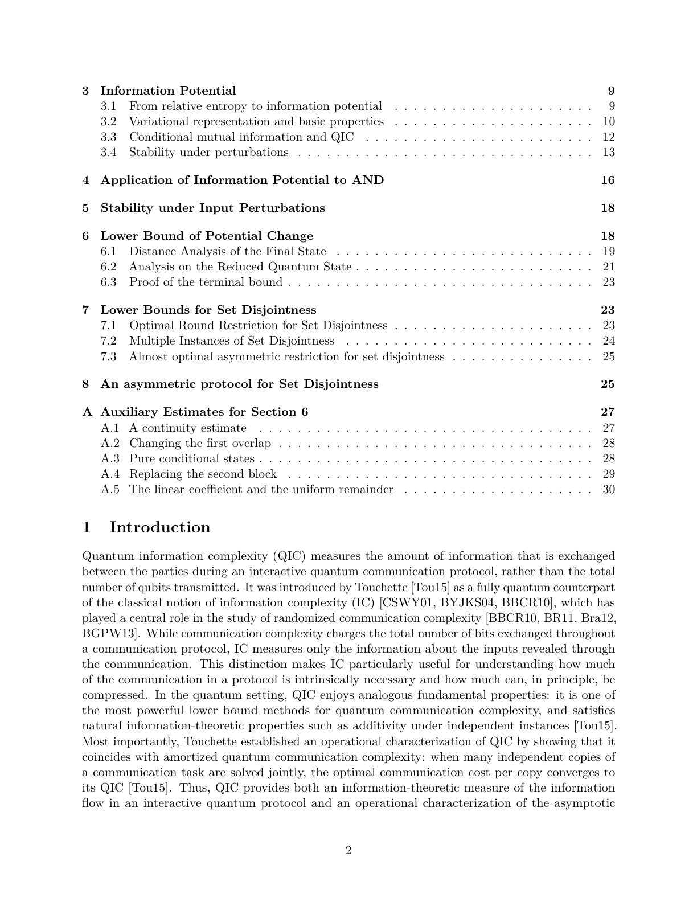
<figcaption class="paper-figure-caption"><b>Fig 1.</b> Low-resolution page preview, page 2</figcaption>
</figure>
<figure class="paper-figure-card">
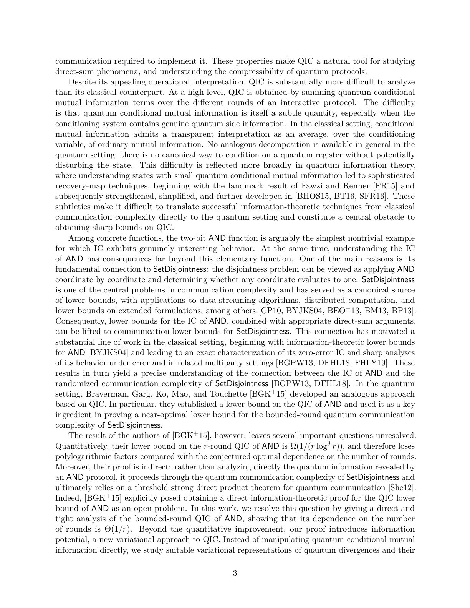
<figcaption class="paper-figure-caption"><b>Fig 2.</b> Low-resolution page preview, page 3</figcaption>
</figure>
<figure class="paper-figure-card">
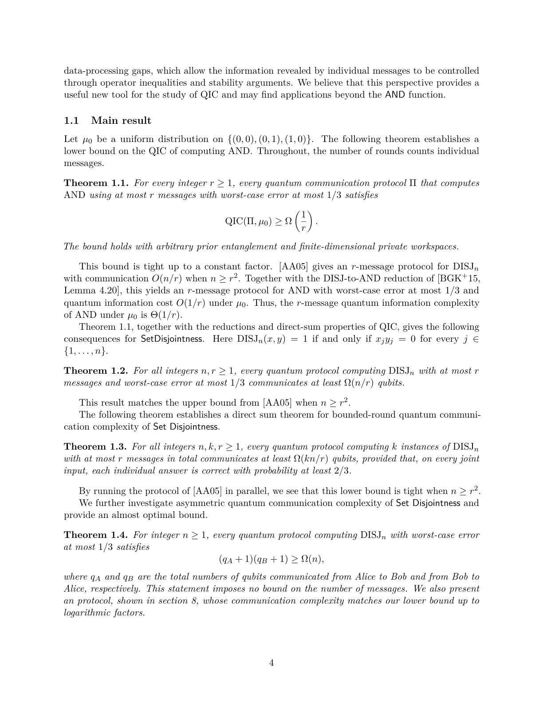
<figcaption class="paper-figure-caption"><b>Fig 3.</b> Low-resolution page preview, page 4</figcaption>
</figure>
<figure class="paper-figure-card">
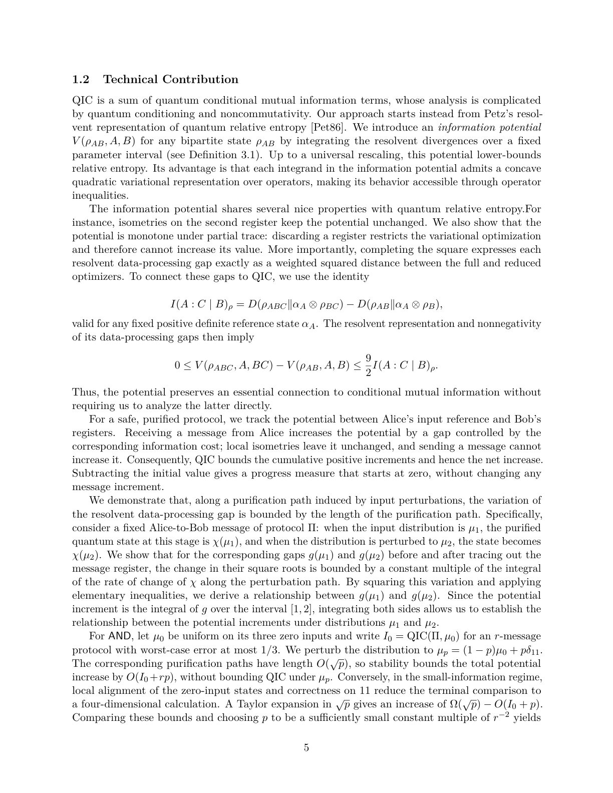
<figcaption class="paper-figure-caption"><b>Fig 4.</b> Low-resolution page preview, page 5</figcaption>
</figure>
<figure class="paper-figure-card">
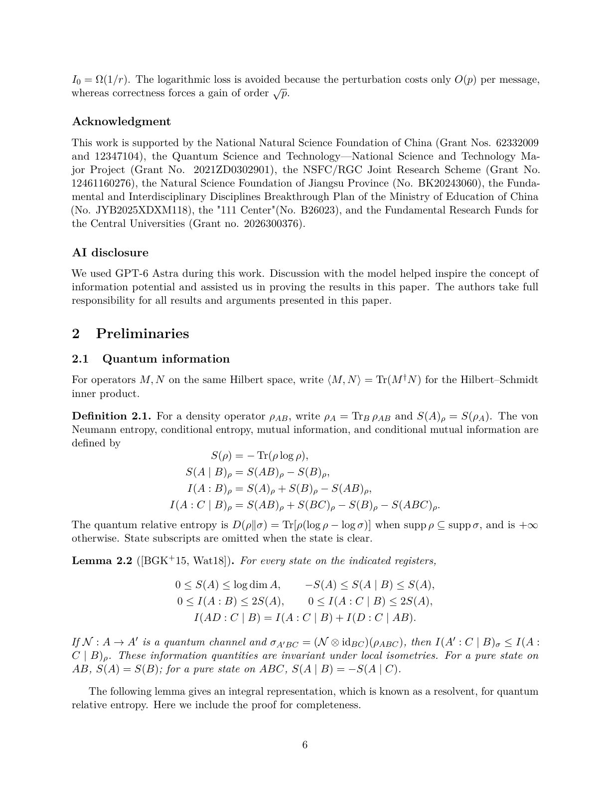
<figcaption class="paper-figure-caption"><b>Fig 5.</b> Low-resolution page preview, page 6</figcaption>
</figure>
</div>

<p><strong>Summary.</strong> This paper introduces the 'information potential,' a novel variational tool, to overcome the analytical difficulties associated with Quantum Information Complexity (QIC). By relating QIC to the potential's growth, the authors derive optimal lower bounds for communication tasks like AND and Set-Disjointness. This provides powerful new tools for quantifying the inherent information cost of quantum computation.</p>
<p><strong>Why it may be interesting.</strong> While focused on communication complexity, the rigorous mathematical machinery involving variational bounds on quantum divergences and relative entropy is highly relevant to understanding information flow and resource quantification in open quantum systems.</p>
<details>
<summary>Detailed structure</summary>
<p><strong>Main problem.</strong> The paper addresses the difficulty of analyzing Quantum Information Complexity (QIC), a key measure for proving quantum communication lower bounds, due to its dependence on hard-to-estimate conditional mutual information terms.</p>
<p><strong>Main result.</strong> They introduce the 'information potential' variational approach, which successfully bounds the cumulative potential increase to derive optimal lower bounds for QIC and quantum communication complexity for functions like AND and Set-Disjointness.</p>
<p><strong>Method.</strong> The core method is the introduction and analysis of the 'information potential,' derived from the resolvent representation of quantum relative entropy, which allows bounding QIC by tracking potential increments along purification paths.</p>
<p><strong>Model / system.</strong> The analysis is applied to quantum communication protocols ($\Pi$) designed to compute specific functions (AND, Set-Disjointness) using local isometries and message transmissions.</p>
<p><strong>Key observables.</strong> Quantum Information Complexity (QIC), the information potential, and the total number of qubits communicated ($q_A, q_B$).</p>
<p><strong>Important parameters / regimes.</strong> The number of rounds ($r$), the input size ($n$), and the error tolerance ($\epsilon$).</p>
<p><strong>Assumptions / limitations.</strong> The analysis assumes the protocol is 'safe' and relies on variational representations and stability arguments to control information leakage.</p>
<p><strong>Paper structure.</strong> The paper develops the variational framework using the information potential, applies it to derive tight lower bounds for the AND function, and then extends these techniques to establish strong lower bounds and tradeoffs for the quantum communication complexity of Set-Disjointness.</p>
</details>
<details>
<summary>Abstract</summary>
<p>Quantum information complexity (QIC), introduced by Touchette [Touchette, STOC 2015], has been shown to be one of the most powerful methods for proving quantum communication complexity and has also been shown to be equal to amortized quantum communication complexity. Unfortunately, QIC is generally hard to analyze because it is a sum of quantum conditional mutual information terms, which are difficult to estimate. In this work, we introduce a new variational approach, the information potential, for analyzing QIC and proving quantum communication lower bounds inspired by the resolvent representation for quantum relative entropy. This approach connects the QIC of individual messages to a quadratic form, making it more amenable and thus enables us to bound the cumulative positive increments of the potential throughout an interactive quantum protocol by its QIC. Lower bounds on the growth of the potential therefore translate into lower bounds on both QIC and quantum communication complexity.   As an application, we give an optimal $Ω(1/r)$ lower bound on the QIC of the two-bit $\mathsf{AND}$ function as well as an optimal $Ω(n/r)$ lower bound on the quantum communication complexity of $r$-round Set-Disjointness, answering an open problem in~[Braverman, Garg, Ko, Mao, Touchette FOCS 2015]. Moreover, we further prove a direct-sum theorem for bounded-round quantum communication complexity of Set Disjointness. With the tight bound on the QIC of $\mathsf{AND}$ function, we further establish a nearly tight tradeoff for the asymmetric quantum communication complexity of $\mathsf{Set} \mathsf{Disjointness}$: $(q_A+1)(q_B+1)=Ω(n)$, where $q_A$ and $q_B$ denote the total numbers of qubits sent by Alice and Bob, respectively.</p>
</details>
<p><sub><a href="#top">↑ back to top</a></sub></p>

<p><a id="paper-2609.38779"></a></p>
<h3 id="motzkin-straus-optimization-on-an-entropy-computing-platform"><a href="http://arxiv.org/abs/2609.38779v1">Motzkin-Straus Optimization on an Entropy-Computing Platform</a></h3>
<p><strong>Authors:</strong> PoJen Wang, Sutapa Samanta, Yuntai Song, Mohammad-Ali Miri<br>
<strong>Type:</strong> both · <strong>Category:</strong> quantum information and computing · <strong>PDF:</strong> <a href="https://arxiv.org/pdf/2609.38779v1">https://arxiv.org/pdf/2609.38779v1</a><br>
<strong>Analysis basis:</strong> full PDF text, analyzed in chunks
<strong>Topic relevance:</strong> <code>analog quantum simulation</code> <strong>2/5</strong> · <code>QC/QI experiment</code> <strong>1/5</strong> · <code>quantum optics experiment</code> <strong>1/5</strong></p>
<div class="figure-strip-hint">↔ Scroll figures horizontally</div>
<div class="paper-figures-scroll">
<figure class="paper-figure-card">
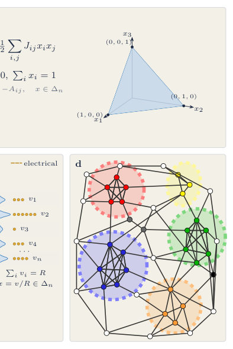
<figcaption class="paper-figure-caption"><b>Fig 1.</b> Fig. 1 A schematic illustration of Motzkin-Straus optimization through entropy com- puting. (a) The maximum clique problem. (b) The Motzkin-Straus mapping of the maximum clique problem to the corresponding quadratic optimization problem over non-negative variables subject to a sum constraint. (c) The entropy computing architecture utilizing photon number encoding in time bins respecting the non-negativity and sum constraints for faithful Motzkin-Straus optimization. (d) Applications of the maximum clique problem in community detection [27].</figcaption>
</figure>
<figure class="paper-figure-card">
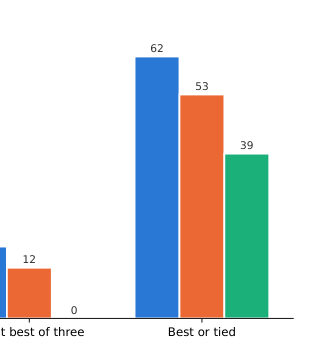
<figcaption class="paper-figure-caption"><b>Fig 2.</b> Fig. 2 Summary of solver performance on the 75 DIMACS benchmark graphs. For each solver, the bars show the number of instances on which it (i) matches best known, i.e. returns a clique size equal to the best known value (or best known lower bound) in Table 1; (ii) is the strict best of three, i.e. returns a clique strictly larger than those of both other solvers; and (iii) is best or tied, i.e. returns a clique at least as large as those of both other solvers, including ties. The counts in each category are taken directly from Table 1.</figcaption>
</figure>
<figure class="paper-figure-card">
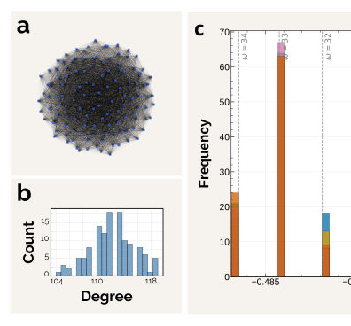
<figcaption class="paper-figure-caption"><b>Fig 3.</b> Fig. 3 Energy distribution of Dirac-3S and Armijo-PGD solutions for the DIMACS graph C125.9. (a) Visualization of the C125.9 graph. (b) Degree distribution of the C125.9 graph. (c) Histogram of the Motzkin-Straus energy values returned across all runs, colored by solver: Armijo- PGD with initial points sampled from a Dirichlet distribution with α = 0.5, and Dirac-3S at each of its four relaxation_schedule (RS) settings. Vertical dashed lines mark the theoretical energy −1</figcaption>
</figure>
<figure class="paper-figure-card">
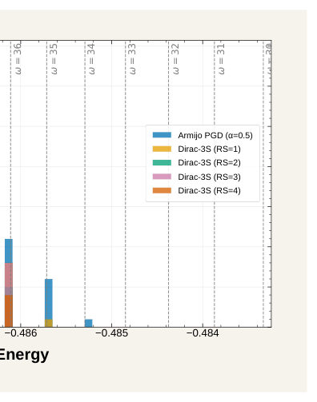
<figcaption class="paper-figure-caption"><b>Fig 4.</b> Fig. 4 Energy distribution of Dirac-3S and Armijo-PGD solutions for the DIMACS graph C250.9. Histogram of the Motzkin-Straus energy values returned across all runs, colored by solver: Armijo-PGD with initial points sampled from a Dirichlet distribution with α = 0.5, and Dirac-3S at each of its four relaxation_schedule (RS) settings. Vertical dashed lines mark the theoretical energy −1</figcaption>
</figure>
</div>

<p><strong>Summary.</strong> This paper introduces a method to solve hard combinatorial optimization problems, like finding the maximum clique, by reformulating them as continuous quadratic programs solvable on a photonic entropy computer. The authors benchmark this platform against leading classical solvers, showing it is highly competitive and establishes entropy computing as a promising new paradigm for tackling classically intractable problems.</p>
<p><strong>Why it may be interesting.</strong> This work directly tackles the computational bottleneck of NP-hard problems by proposing a novel, hardware-native approach (entropy computing) that bypasses traditional quantum circuit overheads, making it highly relevant to quantum computation paradigms.</p>
<details>
<summary>Detailed structure</summary>
<p><strong>Main problem.</strong> The paper addresses the NP-hard problem of finding the maximum clique (or maximum independent set) in a graph.</p>
<p><strong>Main result.</strong> The proposed entropy computing platform (Dirac-3S) demonstrates performance matching or exceeding state-of-the-art classical solvers on most benchmark instances.</p>
<p><strong>Method.</strong> It reformulates the discrete clique problem into a continuous quadratic program solvable via the Motzkin-Straus theorem, which is then implemented on the photonic entropy computer.</p>
<p><strong>Model / system.</strong> The core system is the Dirac-3S photonic entropy computer, which solves the quadratic program subject to probability simplex constraints using photon number encoding. The problem is mathematically mapped to minimizing a quadratic form over the probability simplex.</p>
<p><strong>Key observables.</strong> The primary observable is the size of the maximum clique, $\omega(G)$, derived from the minimum energy $f^*$ found by the optimization process.</p>
<p><strong>Important parameters / regimes.</strong> The scaling parameter $R$ for the probability simplex, and the number of restarts/initializations used in classical benchmarking.</p>
<p><strong>Assumptions / limitations.</strong> The framework assumes that solving the continuous quadratic program on the entropy computer provides a viable pathway to the discrete optimal solution, although extraction methods (rounding, support-based) are necessary.</p>
<p><strong>Figures summary.</strong> Figures illustrate the mapping from the Max Clique problem to a quadratic optimization problem and show the entropy computing architecture using photon number encoding.</p>
<p><strong>Paper structure.</strong> The paper introduces the framework, details the Motzkin-Straus mapping, presents the Dirac-3S platform's implementation, benchmarks its performance against classical solvers (Armijo-PGD, Hexaly) on DIMACS suites, and concludes by establishing the viability of entropy computing for combinatorial optimization.</p>
</details>
<details>
<summary>Abstract</summary>
<p>We introduce a framework for combinatorial optimization using sum-constrained continuous quadratic programs solvable by QCi's Dirac-3S photonic entropy computer. This is enabled by the Motzkin-Straus theorem which provides a powerful bridge between discrete clique problems and optimization over the probability simplex. We demonstrate this framework's versatility by solving constraint satisfaction problems, providing extensive benchmarks on the DIMACS suite. The Dirac-3S platform matches or outright leads two independently implemented classical baselines on more than four-fifths of the benchmark instances, reaching the best known solution on nearly all structured graph families, even outperforming both classical solvers on several of the largest instances tested. On the other hand, well-tuned classical continuous optimizers retain an edge only on the hardest planted-clique instances. This work establishes a viable pathway for solving combinatorial optimization problems using natively analog unconventional computing platforms, while positioning entropy computing as a competitive approach for navigating non-convex landscapes and providing rigorous baselines for an emerging computational paradigm.</p>
</details>
<p><sub><a href="#top">↑ back to top</a></sub></p>

<p><a id="paper-2609.40065"></a></p>
<h3 id="topological-transverse-transport-without-a-gap-in-critical-topological-flat-bands"><a href="http://arxiv.org/abs/2609.40065v1">Topological Transverse Transport without a Gap in Critical Topological Flat Bands</a></h3>
<p><strong>Authors:</strong> Chang-geun Oh, Tomoki Ozawa, Jun-Won Rhim<br>
<strong>Type:</strong> theory · <strong>Category:</strong> other · <strong>PDF:</strong> <a href="https://arxiv.org/pdf/2609.40065v1">https://arxiv.org/pdf/2609.40065v1</a><br>
<strong>Analysis basis:</strong> full PDF text, analyzed in chunks
<strong>Topic relevance:</strong> <code>Keldysh / 2PI / non-Gaussian methods</code> <strong>2/5</strong> · <code>analog quantum simulation</code> <strong>1/5</strong> · <code>non-equilibrium universality</code> <strong>1/5</strong></p>
<div class="figure-strip-hint">↔ Scroll figures horizontally</div>
<div class="paper-figures-scroll">
<figure class="paper-figure-card">
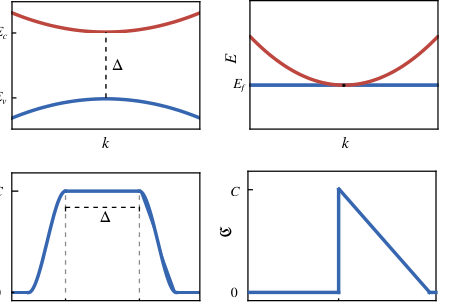
<figcaption class="paper-figure-caption"><b>Fig 1.</b> FIG. 1. Schematic comparison of a gapped Chern insulator and a critical topological flat band. (a) Band structure of a gapped Chern insulator with a spectral gap ∆= Ec −Ev separating the valence and conduction bands. (b) Band structure of a CTFB system, where an exactly flat band at Ef (blue) touches an upper dispersive band (red) quadratically at a single momentum point. (c,d) Cumulative Chern weight C(E) for (c) Chern insulator and (d) CTFB system. Here, C is an integer.</figcaption>
</figure>
<figure class="paper-figure-card">
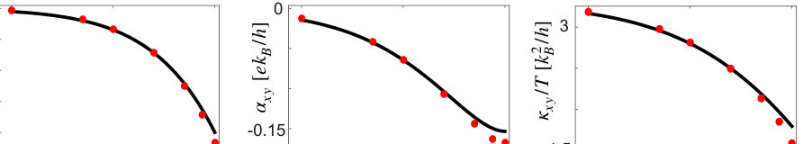
<figcaption class="paper-figure-caption"><b>Fig 2.</b> FIG. 2. Lattice model verification of the critical topology flat-band continuum theory. (a) Band structure of the fluxed dice-lattice model in Eq. (15). (b) Cumulative Chern weight C(E). (c)–(f) The temperature T dependence of the fixed-filling chemical potential µ, electric Hall σxy, thermoelectric Hall αxy, and thermal Hall (κxy/T) coefficients. Red circles denote the results from lattice calculations, while solid curves are the low-energy continuum results in Eqs. (10) and (13) with D0 and eΩ0 determined from the lattice model. See SM for the derivation detail.</figcaption>
</figure>
</div>

<p><strong>Summary.</strong> This work analyzes the thermal transport in Critical Topological Flat Bands (CTFBs), showing that these systems maintain quantized Hall conductivity at zero temperature without a spectral gap. However, the absence of a gap leads to algebraic-logarithmic temperature corrections rather than the exponential suppression seen in gapped insulators. This establishes a critical distinction between the requirements for zero-temperature quantization versus thermal stability.</p>
<p><strong>Why it may be interesting.</strong> The findings provide a detailed, quantitative understanding of how topological protection breaks down in gapless systems, offering insights into non-equilibrium thermal transport in strongly correlated or topological materials.</p>
<details>
<summary>Detailed structure</summary>
<p><strong>Main problem.</strong> The paper investigates the finite-temperature transverse transport properties of Critical Topological Flat Bands (CTFBs), challenging the traditional requirement of a bulk spectral gap for quantized Hall transport.</p>
<p><strong>Main result.</strong> CTFBs show an algebraic-logarithmic hierarchy of low-temperature corrections ($T\ln(1/T)$, etc.), demonstrating that while a gap is unnecessary for zero-temperature quantization, it remains indispensable for exponential thermal protection.</p>
<p><strong>Method.</strong> The authors developed a low-temperature theory using the cumulative Chern weight and analyzed the system under fixed particle number constraints to derive the temperature dependence of Hall responses.</p>
<p><strong>Model / system.</strong> The study focuses on CTFBs, which are characterized by an exactly flat band touching a dispersive continuum while maintaining an integer Chern number. The analysis uses a lattice model (e.g., the 2pi-fluxed dice lattice) to calculate transport coefficients.</p>
<p><strong>Key observables.</strong> Electrical, thermoelectric, and thermal Hall responses ($\sigma_{xy}, \alpha_{xy}, \kappa_{xy}/T$), and the chemical potential $\mu(T)$.</p>
<p><strong>Important parameters / regimes.</strong> Temperature ($T$), the spectral gap ($\Delta$), and the characteristic energy scales related to residual dispersion ($W_f$) and disorder ($\Gamma$).</p>
<p><strong>Assumptions / limitations.</strong> The fixed particle number condition is crucial, leading to a singular Lambert-W drift of the chemical potential; the analysis also compares results to the grand-canonical ensemble.</p>
<p><strong>Figures summary.</strong> Figures compare the band structure and cumulative Chern weight for gapped vs. CTFB systems, and show the temperature dependence of transport coefficients for both lattice calculations and continuum theory.</p>
<p><strong>Paper structure.</strong> The paper establishes the theoretical framework by comparing gapped Chern insulators to CTFBs, derives the low-temperature expansions for the CTFB under fixed particle number, contrasts this with the grand-canonical case, and discusses the implications for thermal protection.</p>
</details>
<details>
<summary>Abstract</summary>
<p>Quantized Hall transport is traditionally anchored to a bulk spectral gap, which isolates the occupied subspace and exponentially suppresses thermal deviations. Recently discovered critical topological flat bands (CTFBs) challenge this paradigm: an exactly flat band touches a dispersive continuum while retaining a well-defined integer Chern number. However, their finite-temperature transverse transport properties remain entirely unexplored. Here, we develop a low-temperature theory of the intrinsic electrical, thermoelectric, and thermal Hall responses in CTFBs. At fixed particle number, the macroscopic flat-band degeneracy forces a singular Lambert-$W$ drift of the chemical potential, generating an algebraic-logarithmic hierarchy of low-temperature corrections: $T\ln(1/T)$ for electrical Hall, $T[\ln(1/T)]^2$ for thermoelectric Hall, and $T[\ln(1/T)]^3$ for thermal Hall conductivity, replacing the activated thermal protection of a gapped Chern insulator. By contrast, externally pinning the chemical potential to the flat-band energy locks the flat band to half occupation at any nonzero temperature, obstructing the recovery of the fully filled topological ground state as $T\to0^+$. Our results establish that a bulk spectral gap is unnecessary for zero-temperature Hall quantization, but indispensable for its exponential thermal protection.</p>
</details>
<p><sub><a href="#top">↑ back to top</a></sub></p>

<p><a id="paper-2609.39879"></a></p>
<h3 id="fault-tolerant-quantum-phases-of-matter"><a href="http://arxiv.org/abs/2609.39879v1">Fault Tolerant Quantum Phases of Matter</a></h3>
<p><strong>Authors:</strong> Colin V. Coane, Shouzhen Gu, Aleksander Kubica<br>
<strong>Type:</strong> theory · <strong>Category:</strong> quantum information and computing · <strong>PDF:</strong> <a href="https://arxiv.org/pdf/2609.39879v1">https://arxiv.org/pdf/2609.39879v1</a><br>
<strong>Analysis basis:</strong> full PDF text, analyzed in chunks
<strong>Topic relevance:</strong> <code>quantum measurements</code> <strong>2/5</strong> · <code>analog quantum simulation</code> <strong>1/5</strong></p>
<div class="figure-strip-hint">↔ Scroll figures horizontally</div>
<div class="paper-figures-scroll">
<figure class="paper-figure-card">
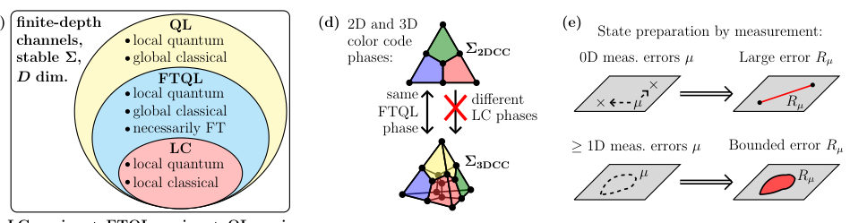
<figcaption class="paper-figure-caption"><b>Fig 1.</b> FIG. 1. (a) Definition of fault tolerant (FTQL) phase equivalence (Definition 9). Two convex sets of states Σ1 and Σ2 are in the same phase if there exist shallow quantum-local (QL) circuits Λ1 and Λ2 which map between states in Σ1 and Σ2, ρi and Λi(ρi) represent the same encoded information, and Λi is fault tolerant. (b) A QL circuit Λ consists of layers of locally reversible local channel (LC) circuits Ci, local measurements Πi, and locally reversible LC circuits C(σ) conditioned on global processing of measurement outcomes σ. A noisy circuit ΛN has qudit noise Ni and measurement noise µ inserted between layers. The action of this circuit on a state ρ can be mimicked by applying a...</figcaption>
</figure>
<figure class="paper-figure-card">
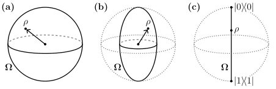
<figcaption class="paper-figure-caption"><b>Fig 2.</b> FIG. 2. Examples of convex sets Ωused to encode logi- cal information, embedded in the space of single-qubit states S  C2 . (a) Ω∼= S  C2 is the Bloch ball and encodes one logical qubit. (b) Ωis a subregion of the Bloch ball. (c) Ωis a classical probability distribution.</figcaption>
</figure>
<figure class="paper-figure-card">
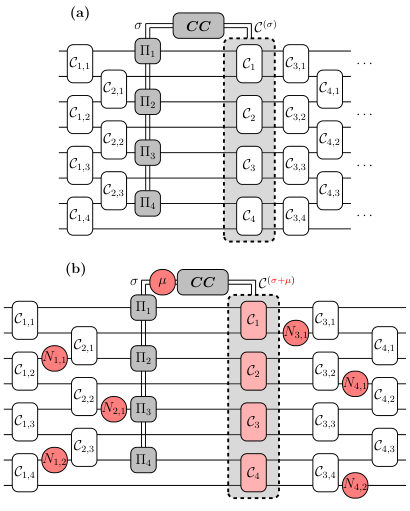
<figcaption class="paper-figure-caption"><b>Fig 3.</b> FIG. 3. (a) Example of a noiseless quantum-local (QL) cir- cuit. A QL circuit Λ consists of layers of locally reversible local channel gates, local measurements, global classical pro- cessing of measurement outcomes and feedback applied in the form of local unitary operators. (b) Specific instance of a noisy QL circuit with a specific pattern of qudit (Ni) and measurement (µ) noise inserted between layers.</figcaption>
</figure>
<figure class="paper-figure-card">
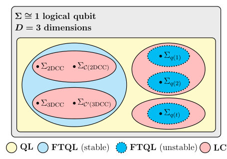
<figcaption class="paper-figure-caption"><b>Fig 4.</b> FIG. 4. Representative phase diagram comparing equivalence and inequivalence of convex sets of states which encode a sin- gle logical qubit according to fault tolerant (FTQL, our def- inition), local channel (LC), and quantum-local (QL) phase classifications. Points label distinct convex sets and colored regions label all convex sets within the same phase. Stable FTQL phases have solid borders and lighter shading, while unstable FTQL phases have dotted borders and darker shad- ing. We denote code spaces of the 2D and 3D color codes Σ2DCC and Σ3DCC respectively, 2D and 3D color codes de- formed by finite-depth locally reversible LC circuits ΣC(2DCC) and ΣC′(3DCC), and the sets of unencoded...</figcaption>
</figure>
<figure class="paper-figure-card">
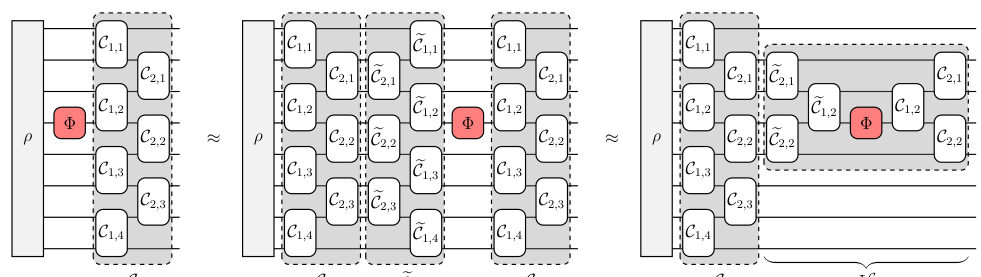
<figcaption class="paper-figure-caption"><b>Fig 5.</b> FIG. 5. Growth of a channel Φ after application of a locally reversible local channel circuit C. Local reversibility allows one to propagate Φ to the end of the circuit, however the support of the effective channel ΦC will be enlarged.</figcaption>
</figure>
</div>

<p><strong>Summary.</strong> This work introduces a sophisticated classification of quantum phases of mixed states based on their resilience to noise during information transfer. By defining fault-tolerant phase equivalence, the authors provide a powerful tool to distinguish between merely connected states and those that can reliably maintain quantum information under realistic noisy operations. This has significant implications for the theory and implementation of topological quantum computation.</p>
<p><strong>Why it may be interesting.</strong> The rigorous mathematical framework connecting topological order, error correction, and noise robustness is crucial for designing practical quantum hardware and understanding the limits of quantum memory.</p>
<details>
<summary>Detailed structure</summary>
<p><strong>Main problem.</strong> The paper aims to classify quantum phases of mixed states based on their ability to preserve and fault-tolerantly transfer encoded quantum information.</p>
<p><strong>Main result.</strong> It establishes a hierarchy of phase equivalences (LC, QL, FTQL) and proves that fault-tolerant state preparation is possible for qudit stabilizer codes with extended syndromes but not for point-like syndrome measurements.</p>
<p><strong>Method.</strong> The authors use circuit-based definitions of phase equivalence, incorporating local channel circuits, measurements, and classical communication, while rigorously enforcing noise robustness.</p>
<p><strong>Model / system.</strong> The analysis focuses on systems of qudits on regular lattices embedded in D-dimensional space, particularly examining topological codes like color codes and stabilizer codes.</p>
<p><strong>Key observables.</strong> Phase equivalence (FTQL, LC, QL), recovery threshold for local noise, and the ability to perform fault-tolerant state preparation.</p>
<p><strong>Important parameters / regimes.</strong> The dimensionality of the lattice (D), the local dimension of the qudits (d), and the depth/range of the connecting quantum circuits.</p>
<p><strong>Assumptions / limitations.</strong> The classification relies on the assumption that information transfer must be robust to noise, leading to the definition of FTQL equivalence.</p>
<p><strong>Figures summary.</strong> Figures illustrate the definitions of FTQL phase equivalence, the structure of noisy QL circuits, the hierarchy of phase equivalences, and the comparison of state preparation error scaling based on measurement dimensionality.</p>
<p><strong>Paper structure.</strong> The paper develops definitions for different types of phase equivalence (LC, QL) and then introduces the stringent requirement of fault tolerance to define the FTQL phase, culminating in specific proofs regarding code equivalence and state preparation limits.</p>
</details>
<details>
<summary>Abstract</summary>
<p>We introduce a classification of quantum phases of mixed states based on the ability to preserve and fault tolerantly transfer information. We formulate phase equivalence between sets of states that encode logical quantum information and are connected by shallow local channel circuits assisted by local measurements and global classical communication of measurement outcomes, where all quantum operations, including measurements, must be robust to noise. We show that the existence of a recovery threshold for local noise is a property of an entire phase. We prove that any two sets of states with nonzero thresholds that are related by finite-depth local channel circuits belong to the same fault tolerant phase. Our approach leads to a classification of subsystem codes without favoring any state of the gauge subsystem, and we demonstrate phase equivalence between 2D and 3D color codes using dimensional jumps within the 3D gauge color code. Lastly, we study how syndrome structure affects fault tolerance in circuits with measurements. We show that qudit stabilizer codes with extended syndromes permit single-shot state preparation, whereas a broad class of shallow circuits measuring point-like syndromes, including state preparation for 2D topological codes and non-Abelian topological orders with solvable anyon theories, is not fault tolerant.</p>
</details>
<p><sub><a href="#top">↑ back to top</a></sub></p>

<p><a id="paper-2609.39113"></a></p>
<h3 id="optimal-testing-of-fermionic-and-bosonic-gaussian-states"><a href="http://arxiv.org/abs/2609.39113v1">Optimal testing of fermionic and bosonic Gaussian states</a></h3>
<p><strong>Authors:</strong> Vishnu Iyer, Bryan O'Gorman, Ojas Parekh, Kevin Thompson, Andrew Zhao<br>
<strong>Type:</strong> theory · <strong>Category:</strong> quantum information and computing · <strong>PDF:</strong> <a href="https://arxiv.org/pdf/2609.39113v1">https://arxiv.org/pdf/2609.39113v1</a><br>
<strong>Analysis basis:</strong> full PDF text, analyzed in chunks
<strong>Topic relevance:</strong> <code>analog quantum simulation</code> <strong>2/5</strong> · <code>quantum measurements</code> <strong>1/5</strong></p>
<div class="figure-strip-hint">↔ Scroll figures horizontally</div>
<div class="paper-figures-scroll">
<figure class="paper-figure-card">
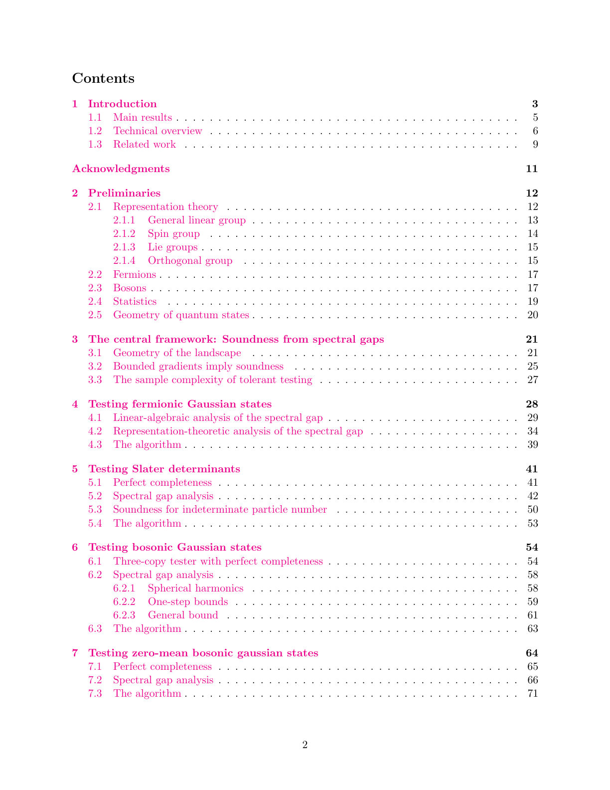
<figcaption class="paper-figure-caption"><b>Fig 1.</b> Low-resolution page preview, page 2</figcaption>
</figure>
<figure class="paper-figure-card">
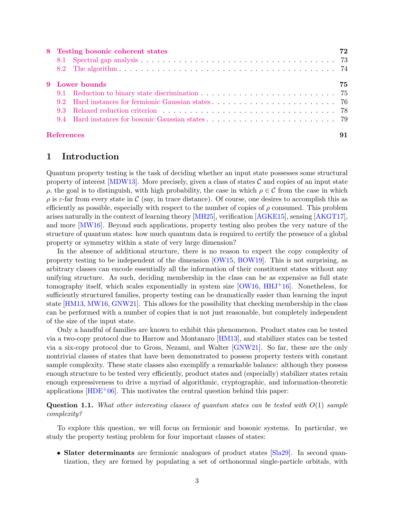
<figcaption class="paper-figure-caption"><b>Fig 2.</b> Low-resolution page preview, page 3</figcaption>
</figure>
<figure class="paper-figure-card">
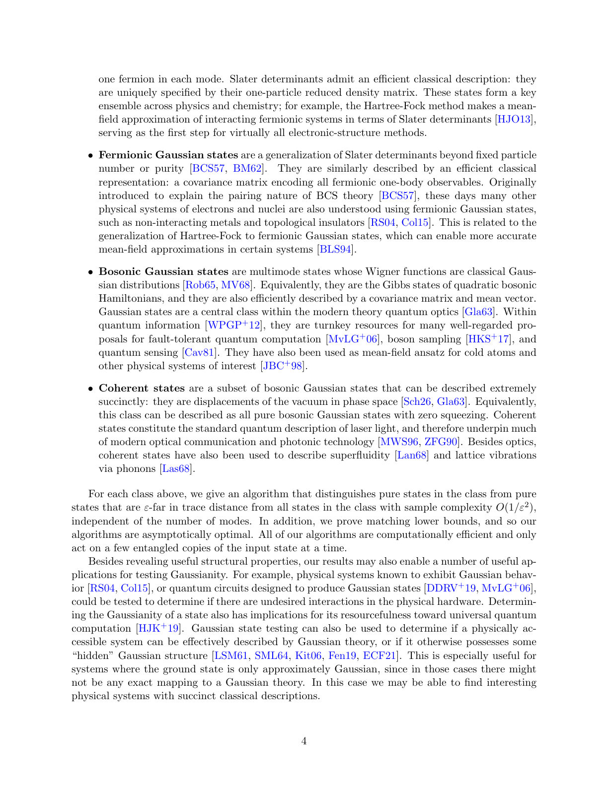
<figcaption class="paper-figure-caption"><b>Fig 3.</b> Low-resolution page preview, page 4</figcaption>
</figure>
<figure class="paper-figure-card">
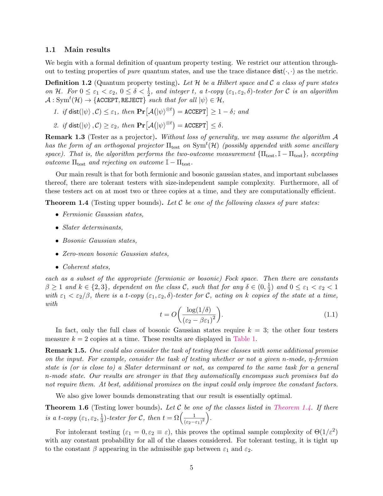
<figcaption class="paper-figure-caption"><b>Fig 4.</b> Low-resolution page preview, page 5</figcaption>
</figure>
<figure class="paper-figure-card">
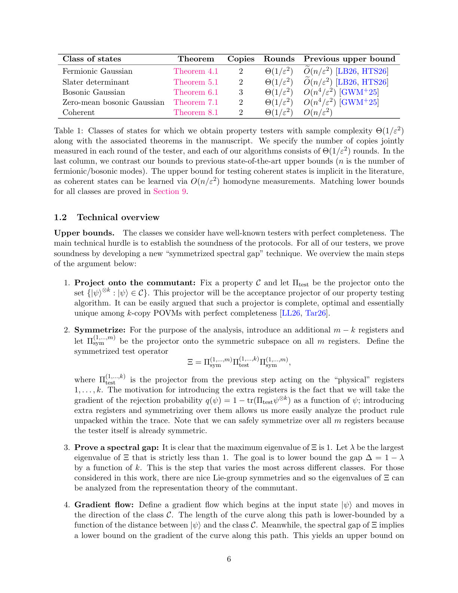
<figcaption class="paper-figure-caption"><b>Fig 5.</b> Low-resolution page preview, page 6</figcaption>
</figure>
</div>

<p><strong>Summary.</strong> This paper develops optimal quantum property testers for several key classes of Gaussian quantum states, including fermionic and bosonic types. It proves that testing membership in these structured classes requires a sample complexity that is constant with respect to the system size, achieving a tight bound of $\Theta(1/\epsilon^2)$. This result is significant because it provides highly efficient verification tools for states common in quantum optics and condensed matter theory.</p>
<p><strong>Why it may be interesting.</strong> This work provides fundamental, resource-efficient tools (constant sample complexity testers) for verifying the structure of quantum states relevant to quantum optics and many-body physics, which is crucial for quantum computation and simulation.</p>
<details>
<summary>Detailed structure</summary>
<p><strong>Main problem.</strong> The paper addresses the quantum property testing problem: determining if an unknown quantum state belongs to a specific class of states or if it is far from that class.</p>
<p><strong>Main result.</strong> The authors establish a tight, constant sample complexity of $\Theta(1/\epsilon^2)$ for testing five important classes of Gaussian quantum states, independent of the system size.</p>
<p><strong>Method.</strong> The testers are constructed using projections onto the 'top' irreducible representation of multiple copies of the state, with optimality proven by matching lower bounds derived from binary state discrimination.</p>
<p><strong>Model / system.</strong> The focus is on characterizing and testing five structured classes of pure quantum states: Fermionic Gaussian states, Slater determinants, Bosonic Gaussian states, zero-mean bosonic Gaussian states, and bosonic coherent states.</p>
<p><strong>Key observables.</strong> Trace distance ($  ext{dist}(\cdot, \cdot)$), spectral gap of the test projector, and the required sample complexity ($t$).</p>
<p><strong>Important parameters / regimes.</strong> The error parameter $\epsilon$ (related to the distance) and the number of copies used in the test (2 or 3).</p>
<p><strong>Assumptions / limitations.</strong> The analysis extends to the tolerant setting, where the input state may be $O(\epsilon)$-close to the class $C$.</p>
<p><strong>Paper structure.</strong> The paper introduces the property testing framework, analyzes the specific Gaussian state classes, develops the projection-based testers, and proves the optimal sample complexity by establishing matching upper and lower bounds.</p>
</details>
<details>
<summary>Abstract</summary>
<p>We study the problem of property testing quantum states: given a pure state $|ψ\rangle$ that either (A) belongs to some class $C$ of pure states, or (B) is $\varepsilon$-far in trace distance from all states in $C$, determine which is the case with high probability. It is known that there exists classes $C$ for which the sample complexity of property testing necessarily scales with the size of the system. In this work, we identify classes for which testing only requires a size-independent number of samples. We prove a tight sample complexity of $Θ(1/\varepsilon^2)$ for the property testing of five important classes of Gaussian quantum states: 1) Fermionic Gaussian states, 2) Slater determinants, 3) bosonic Gaussian states, 4) zero-mean bosonic Gaussian states, and 5) bosonic coherent states.   While property testers for some of these classes have been studied previously, those analyses only gave upper bounds scaling polynomially in the number of modes. In each case, our tester is the projection onto the ``top'' irrep of two or three copies. We get to constant sample complexity by lower bounding how quickly the rejection probability increases with distance from the class; the main technical component involves bounding the spectral gap of symmetric extension of the test projector. We then establish optimality by proving matching lower bounds based on binary state discrimination for each class. Our testers and optimality claims also extend to the tolerant setting, wherein $ψ$ may be $O(\varepsilon)$-close to $C$ in case (A), rather than lying exactly inside.</p>
</details>
<p><sub><a href="#top">↑ back to top</a></sub></p>

<p><a id="paper-2609.40259"></a></p>
<h3 id="self-testing-the-toric-code-against-classical-communication"><a href="http://arxiv.org/abs/2609.40259v1">Self-testing the toric code against classical communication</a></h3>
<p><strong>Authors:</strong> Gustavo Fróes, Amanda Wei, Carlos de Gois, Denis Rochette, Marc-Olivier Renou<br>
<strong>Type:</strong> theory · <strong>Category:</strong> quantum information and computing · <strong>PDF:</strong> <a href="https://arxiv.org/pdf/2609.40259v1">https://arxiv.org/pdf/2609.40259v1</a><br>
<strong>Analysis basis:</strong> full PDF text, analyzed in chunks
<strong>Topic relevance:</strong> <code>quantum measurements</code> <strong>2/5</strong> · <code>analog quantum simulation</code> <strong>1/5</strong></p>
<div class="figure-strip-hint">↔ Scroll figures horizontally</div>
<div class="paper-figures-scroll">
<figure class="paper-figure-card">
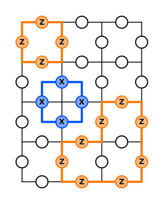
<figcaption class="paper-figure-caption"><b>Fig 1.</b> Figure 1: Illustration of the primal and dual loops acting on a patch toric code. Physical qubits are associated with the edges of the primal lattice. The orange paths represent contractible loops in the primal lattice, and the corresponding product of Pauli Z operators. The blue path represents a contractible loop in the dual lattice, and the corresponding product of Pauli X operators act- ing on the primal edges crossed by the loop.</figcaption>
</figure>
<figure class="paper-figure-card">
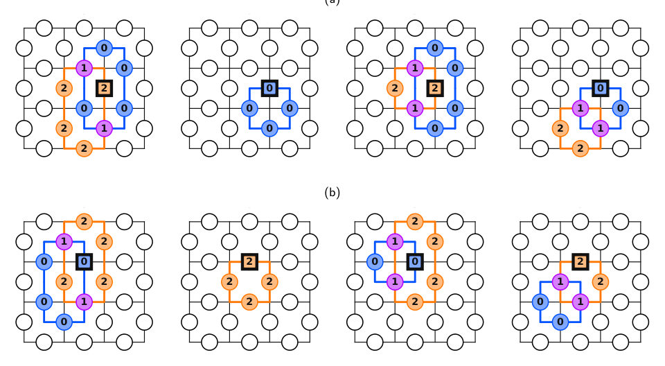
<figcaption class="paper-figure-caption"><b>Fig 2.</b> Figure 2: A 3 × 3 patch of the toric code with the inputs given by the referee to each party in the submeasurements 1 through 4, from left to right, for certifying the anticommutation relations without any communication. For (a) a vertical edge and (b) a horizontal edge. Orange and blue loops represent primal and dual contractible loops, respectively. The numbers inside the qubits indicate the corresponding measurement inputs, while the target qubit (a) t = V (2, 1) and (b) t = H(1, 2) is highlighted by a square. Parties without explicit inputs receive 1 and do not participate in the submeasurement.</figcaption>
</figure>
<figure class="paper-figure-card">
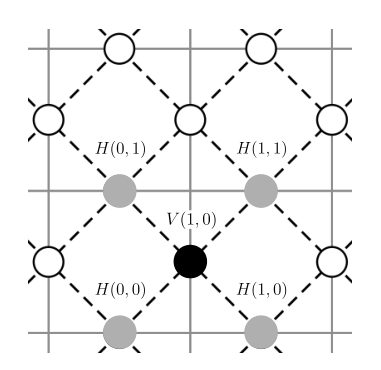
<figcaption class="paper-figure-caption"><b>Fig 3.</b> Figure 3: Communication graph (black dashed lines) for the parties on the toric code lattice (gray lines). The four neighbors of the party located at V (1, 0), shown in black, are highlighted in gray.</figcaption>
</figure>
<figure class="paper-figure-card">
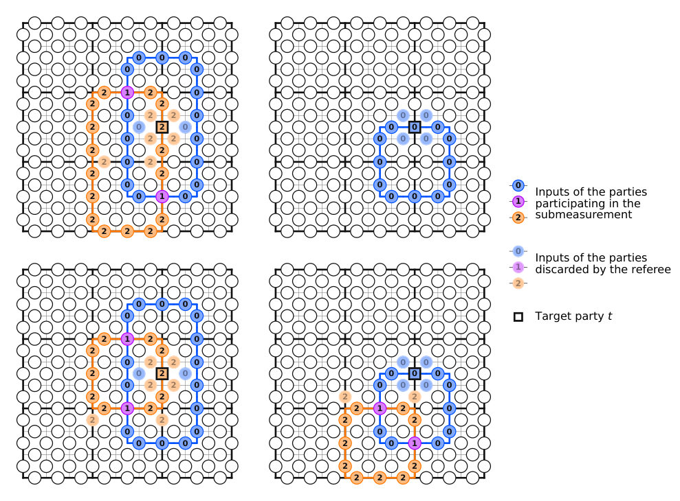
<figcaption class="paper-figure-caption"><b>Fig 4.</b> Figure 4: A 9 × 9 patch of the toric code showing the inputs assigned by the referee in measurements 1 through 4, ordered left to right and top to bottom, to certify the anticommutation relations. The fine lattice is shown in gray, while the coarse-grained lattice is highlighted in black. Orange and blue curves represent primal and dual contractible loops, respectively. The numbers displayed on the qubits indicate the corresponding measurement inputs, and the target qubit t = V (6, 4) is highlighted by a square. The parties included in each submeasurement are those associated with the primal and dual loops. Faded inputs, outside of the loops, correspond to the additional inputs assigned to...</figcaption>
</figure>
<figure class="paper-figure-card">
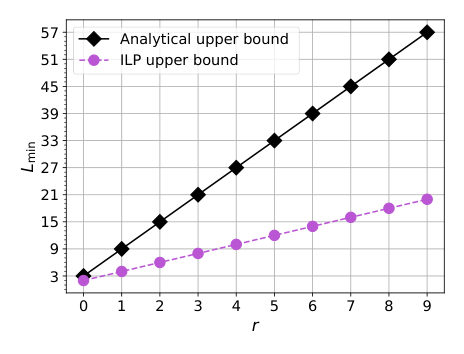
<figcaption class="paper-figure-caption"><b>Fig 5.</b> Figure 5: Upper bounds on the minimum lattice size re- quired for self-testing against r rounds of classical com- munication. Black diamonds correspond to the analyti- cal construction presented in Section 3, while purple cir- cles indicate the minimum lattice sizes obtained numer- ically via the integer linear program. The corresponding explicit constructions are given in Appendix G and in [41].</figcaption>
</figure>
</div>

<p><strong>Summary.</strong> This paper develops communication-robust self-testing protocols for the toric code, a key model in quantum error correction. It extends existing theory to account for limited classical communication between distant parties in a quantum network. The main result demonstrates that the code space can be verified using measurement statistics even when classical messages are exchanged up to a distance proportional to the network size.</p>
<p><strong>Why it may be interesting.</strong> The work provides a powerful generalization of quantum resource certification, showing how topological quantum error-correcting codes can be verified even in realistic, noisy quantum networks where limited classical communication is possible.</p>
<details>
<summary>Detailed structure</summary>
<p><strong>Main problem.</strong> The paper addresses the challenge of developing device-independent self-testing protocols for multipartite quantum states, specifically relaxing the strict requirement that parties cannot communicate classically.</p>
<p><strong>Main result.</strong> They successfully show that the code space of the toric code can be self-tested in a noise-robust way even when parties can exchange classical messages within a bounded distance proportional to the network diameter.</p>
<p><strong>Method.</strong> The authors develop systematic algorithmic methods, involving the analysis of submeasurements and comparison between physical experiment statistics and reference expectations, to certify the required stabilizer properties.</p>
<p><strong>Model / system.</strong> The primary model is the toric code, a topological error-correcting code defined on a lattice with periodic boundary conditions. The analysis is extended to a quantum network setting where communication is possible but restricted.</p>
<p><strong>Key observables.</strong> Expectation values of products of Pauli operators ($\langle\Psi| O_i eO_{x_i} |\Psi
angle$) measured in a Physical Experiment (PE) compared to a Reference Experiment (RE).</p>
<p><strong>Important parameters / regimes.</strong> The robustness is quantified by the maximum communication distance $r$, which is shown to be proportional to the network diameter.</p>
<p><strong>Assumptions / limitations.</strong> The classical messages exchanged are assumed not to depend on the outcomes of the quantum measurements, and the measurements in the PE are assumed to be projective.</p>
<p><strong>Figures summary.</strong> Figures illustrate the measurement patterns (certificates) required for self-testing the toric code for increasing rounds of classical communication ($r=2$ through $r=5$), detailing certificates for anticommutation and stabilizer generators.</p>
<p><strong>Paper structure.</strong> The paper builds from the general concept of self-testing to the specific case of the toric code. It first establishes the necessary conditions for communication-robust protocols, then details the mathematical framework using submeasurements, and finally presents systematic constructions and results for increasing communication distances $r$.</p>
</details>
<details>
<summary>Abstract</summary>
<p>Device-independent self-testing certifies a multipartite quantum state from the correlations it produces alone, without assumptions on the inner workings of the devices. Most existing self-tests, however, break down as soon as the parties can exchange messages. We consider a relaxed setting in a quantum network, where in the honest version of the protocol, the parties never communicate, yet certification remains sound even in an untrusted case where the untrusted devices secretly exchange classical messages within a bounded distance in the network. We show that the code space of the toric code, distributed over a network with the geometry of a torus, can be self-tested in this setting in a noise-robust way, against communication up to distances proportional to the network diameter. We also develop an algorithmic method for constructing such protocols and extend our results to the surface code and cluster states, robust to one round of nearest-neighbor classical communication</p>
</details>
<p><sub><a href="#top">↑ back to top</a></sub></p>

<p><a id="paper-2609.39965"></a></p>
<h3 id="single-shot-state-preparation-threshold-rigorous-theorem-and-statistical-mechanical-mapping"><a href="http://arxiv.org/abs/2609.39965v1">Single-shot state preparation threshold: rigorous theorem and statistical mechanical mapping</a></h3>
<p><strong>Authors:</strong> Yuanchen Zhao, Yi Yuan, Zhengyi Han, Dong E. Liu<br>
<strong>Type:</strong> theory · <strong>Category:</strong> quantum information and computing · <strong>PDF:</strong> <a href="https://arxiv.org/pdf/2609.39965v1">https://arxiv.org/pdf/2609.39965v1</a><br>
<strong>Analysis basis:</strong> full PDF text, analyzed in chunks
<strong>Topic relevance:</strong> <code>quantum measurements</code> <strong>2/5</strong> · <code>methods for driven-dissipative</code> <strong>1/5</strong></p>
<div class="figure-strip-hint">↔ Scroll figures horizontally</div>
<div class="paper-figures-scroll">
<figure class="paper-figure-card">
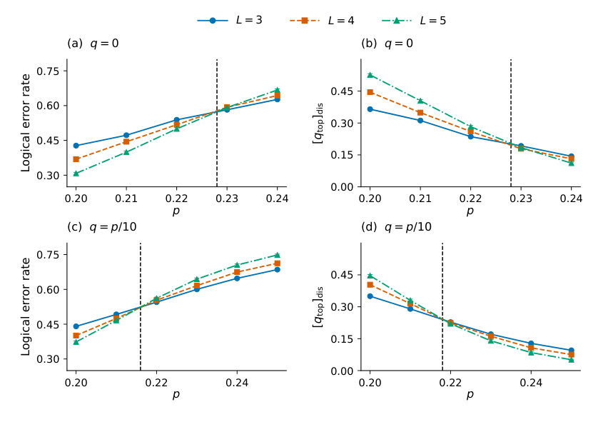
<figcaption class="paper-figure-caption"><b>Fig 1.</b> FIG. 1. Numerical evidence for a nonzero single-shot state-preparation threshold in the three-dimensional toric code with readout errors. Panels (a,b) show noiseless readout, q = 0, while panels (c,d) include readout errors with q = p/10, where p and q are the data and readout error probabilities, respectively. At lower noise, increasing the system size suppresses the logical error rate after ideal maximum-likelihood final recovery (left) and increases the logical-sector order parameter [qtop]dis (right); both size dependences reverse at higher noise. The persistence of these crossings at nonzero readout noise supports a single-shot preparation threshold even with sublinear soundness....</figcaption>
</figure>
</div>

<p><strong>Summary.</strong> This paper establishes new, weaker structural conditions—specifically linear confinement—that are sufficient to guarantee a non-zero threshold for single-shot state preparation in quantum error correcting codes. By developing a statistical mechanical mapping, the authors provide a powerful tool to analyze the logical error rate, suggesting that even sublinear soundness might suffice for fault-tolerant quantum computation.</p>
<p><strong>Why it may be interesting.</strong> The work provides concrete, structural conditions (linear confinement) that guarantee fault-tolerance thresholds, which is crucial for designing practical, resource-efficient quantum computation protocols.</p>
<details>
<summary>Detailed structure</summary>
<p><strong>Main problem.</strong> The paper addresses the fundamental question of determining the threshold for performing single-shot state preparation in Quantum Error Correction (QEC) codes.</p>
<p><strong>Main result.</strong> It proves that linear confinement, a structural property, is sufficient for a nonzero single-shot state-preparation threshold for CSS qLDPC codes, contradicting the prior belief that full soundness is necessary.</p>
<p><strong>Method.</strong> The authors use rigorous mathematical proofs, developing a statistical mechanical mapping to relate the logical error rate to a classical partition function, and employing Monte Carlo simulations.</p>
<p><strong>Model / system.</strong> The analysis focuses on CSS quantum low-density parity-check (qLDPC) codes and the process of preparing logical codewords using only a single round of noisy syndrome measurements.</p>
<p><strong>Key observables.</strong> Logical error probability ($P_{	ext{fail}}$), residual data error, and the structure of the error channel $\mathcal{S}$.</p>
<p><strong>Important parameters / regimes.</strong> Code distance ($d$), error parameters ($p, q$), and structural properties like linear confinement and linear soundness.</p>
<p><strong>Assumptions / limitations.</strong> The analysis assumes the state preparation is followed by an ideal final recovery, and the statistical mapping relies on maximum-likelihood final recovery.</p>
<p><strong>Paper structure.</strong> The paper first defines the necessary preliminaries for CSS codes, then presents the main threshold theorem based on structural properties (soundness vs. confinement), and concludes with the development and application of a statistical mechanical mapping.</p>
</details>
<details>
<summary>Abstract</summary>
<p>Preparing logical codewords with a single round of noisy syndrome measurements can reduce the time overhead of fault-tolerant quantum computation. It remains unclear which structural properties of the code suffice to guarantee a threshold for single-shot state preparation. Here we prove that linear confinement suffices for a nonzero single-shot state-preparation threshold for CSS quantum low-density parity-check codes, in contrast to the common belief that soundness is necessary. When the distance is at least logarithmic, we prove that below nonzero local stochastic readout and data error thresholds, the logical error probability after a formal ideal final recovery is exponentially small and approaches zero when the code size approaches infinity. Under the stronger assumption of linear soundness, we show that the residual data error of the preparation protocol is local stochastic, directly allowing composition with other fault-tolerant gadgets. To investigate single-shot state-preparation threshold beyond the above assumptions, we further develop a statistical mechanical mapping that expresses the final logical error rate in terms of a classical partition function. We perform Monte Carlo simulations of this model for the three-dimensional toric code. The numerical results suggest that sublinear soundness can also support a single-shot state-preparation threshold.</p>
</details>
<p><sub><a href="#top">↑ back to top</a></sub></p>

<p><a id="paper-2609.40270"></a></p>
<h3 id="testing-quantum-gaussianity-with-constant-sample-complexity"><a href="http://arxiv.org/abs/2609.40270v1">Testing quantum Gaussianity with constant sample complexity</a></h3>
<p><strong>Authors:</strong> Mahtab Yaghubi Rad, Ricard Puig, Saksham Hassanandani, Luke Coffman, Jens Eisert, Carlos Bravo-Prieto, Antonio Anna Mele<br>
<strong>Type:</strong> theory · <strong>Category:</strong> quantum information and computing · <strong>PDF:</strong> <a href="https://arxiv.org/pdf/2609.40270v1">https://arxiv.org/pdf/2609.40270v1</a><br>
<strong>Analysis basis:</strong> full PDF text, analyzed in chunks
<strong>Topic relevance:</strong> <code>quantum measurements</code> <strong>2/5</strong> · <code>analog quantum simulation</code> <strong>1/5</strong></p>
<div class="figure-strip-hint">↔ Scroll figures horizontally</div>
<div class="paper-figures-scroll">
<figure class="paper-figure-card">
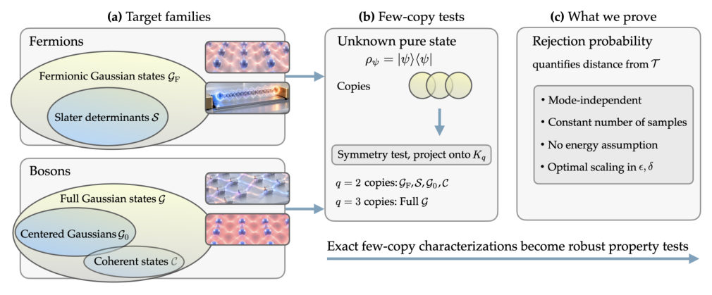
<figcaption class="paper-figure-caption"><b>Fig 1.</b> FIG. 1. Framework for robust few-copy Gaussianity testing. (a) We consider five target families of pure states: fermionic Gaussian states GF and their number-conserving subclass of Slater determinants S, as well as full bosonic Gaussian states G, centered Gaussian states G0, and coherent states C. Also shown a representations of Majorana fermions and cold fermionic atoms in optical lattices as typical physical architectures for fermions, and linear optical networks and cold bosonic in optical lattices as typical physical platforms for bosons. (b) Given identical copies of an unknown state vector ρψ = |ψ⟩⟨ψ|, the tests project onto a symmetry-defined acceptance subspace Kq. Two copies...</figcaption>
</figure>
<figure class="paper-figure-card">
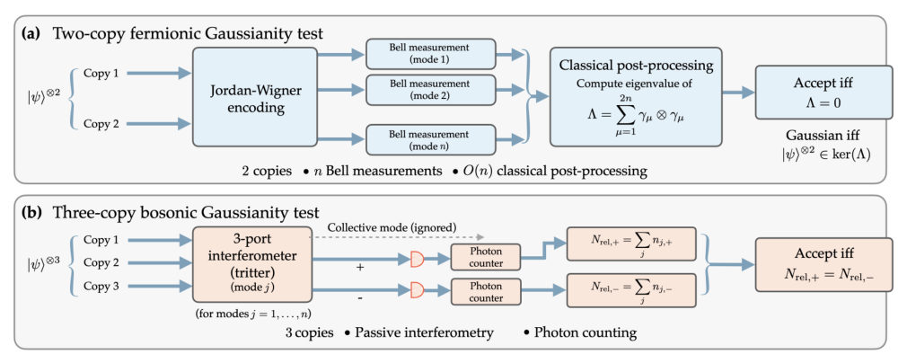
<figcaption class="paper-figure-caption"><b>Fig 2.</b> FIG. 2. Operational implementations of the few-copy Gaussianity tests. (a) Fermionic Gaussianity is tested on two copies by projecting onto the kernel of Λ = P2n µ=1 γµ ⊗γµ. Under a Jordan–Wigner encoding, this can be implemented by Bell measurements on corresponding orbital pairs, followed by linear-time classical post-processing. (b) General bosonic Gaussianity is tested on three copies. For each physical mode, a passive three-port interferometer separates the collective copy direction from two relative directions. After photon counting on the two relative output families, the test accepts iff their total photon numbers satisfy Nrel,+ = Nrel,−. The collective outputs are ignored.</figcaption>
</figure>
</div>

<p><strong>Summary.</strong> This paper develops optimal, resource-efficient quantum protocols to test if an unknown quantum state is Gaussian, applicable to both fermionic and bosonic systems. Using a novel gradient-flow method, the authors achieve a sample complexity independent of system size, making these tests highly scalable and experimentally feasible. This advances the field of quantum state characterization by providing robust, few-copy measurement schemes.</p>
<p><strong>Why it may be interesting.</strong> This work provides rigorous, resource-efficient quantum protocols for verifying fundamental structural properties (Gaussianity) in quantum states, which is crucial for validating simulations and understanding physical models in quantum optics and many-body physics.</p>
<details>
<summary>Detailed structure</summary>
<p><strong>Main problem.</strong> The paper addresses the fundamental and practical challenge of efficiently testing whether an unknown quantum state possesses the structure of a Gaussian state.</p>
<p><strong>Main result.</strong> Optimal and robust algorithms are provided to test fermionic and bosonic Gaussianity with a sample complexity independent of the system size or particle number.</p>
<p><strong>Method.</strong> The authors develop a unified 'gradient-flow method' combining representation theory with the geometry of the rejection probability to derive these efficient, few-copy measurement protocols.</p>
<p><strong>Model / system.</strong> The focus is on pure fermionic and bosonic Gaussian states, which are central to quantum optics and many-body physics. Specific families include fermionic Gaussian states, general bosonic Gaussian states, and coherent states.</p>
<p><strong>Key observables.</strong> Rejection probability $R(\psi)$, distance threshold $\epsilon$, and the required number of copies (sample complexity).</p>
<p><strong>Important parameters / regimes.</strong> The sample complexity scales as $\Theta(\epsilon^{-2} \log(1/\delta))$, independent of the number of modes.</p>
<p><strong>Assumptions / limitations.</strong> The protocols are shown to be robust, meaning the measurement fidelity holds even when the state is slightly perturbed from the Gaussian family.</p>
<p><strong>Figures summary.</strong> Figure 1 outlines the five target Gaussian families and the required copy numbers (two for fermions/some bosons, three for general bosons). Figure 2 details the operational measurements using Bell sampling for fermions and passive interferometry for bosons.</p>
<p><strong>Paper structure.</strong> The paper establishes the problem, presents the unified gradient-flow method, derives the non-tolerant test complexity (Theorem II.1), and then extends to the more general, tolerant testing regime (Theorem II.2). Later sections detail the specific physical implementations for fermions and bosons.</p>
</details>
<details>
<summary>Abstract</summary>
<p>Efficiently testing whether a quantum state possesses a given structure is both a fundamental and a practical task in quantum information. Among the most important structured families are Gaussian states, which underpin quantum optics and many-body physics while defining paradigmatic regimes of efficient classical simulation. Despite the central role of Gaussian states, optimal tests of Gaussianity have remained unknown. Here we give optimal and robust algorithms for testing fermionic and bosonic Gaussian states, with sample complexity independent of system size, particle number, and energy. Remarkably, the protocols implement experimentally feasible measurements associated with known exact symmetry characterizations of Gaussianity, using Bell sampling on two copies for fermions and passive interferometry with photon counting on three copies for bosons. We further obtain tolerant testers requiring joint measurements on a larger, but still constant, number of copies. At the heart of our analysis is a unified approach---which we call the gradient-flow method---that applies across all structured families considered here and underlies our optimal testers: representation theory turns approximate satisfaction of the defining symmetry into quantitative control of the gradient of the rejection probability, allowing a continuous descent from the input state to the target family whose length bounds their distance.</p>
</details>
<p><sub><a href="#top">↑ back to top</a></sub></p>

<p><a id="paper-2609.39318"></a></p>
<h3 id="a-dichotomy-for-mip-in-the-presence-of-unital-noise"><a href="http://arxiv.org/abs/2609.39318v1">A Dichotomy for MIP* in the Presence of Unital Noise</a></h3>
<p><strong>Authors:</strong> Yangjing Dong, Zhenyu Jiang, Minglong Qin, Penghui Yao, Haigang Zhou<br>
<strong>Type:</strong> theory · <strong>Category:</strong> quantum information and computing · <strong>PDF:</strong> <a href="https://arxiv.org/pdf/2609.39318v1">https://arxiv.org/pdf/2609.39318v1</a><br>
<strong>Analysis basis:</strong> full PDF text, analyzed in chunks
<strong>Topic relevance:</strong> <code>quantum measurements</code> <strong>2/5</strong></p>
<div class="figure-strip-hint">↔ Scroll figures horizontally</div>
<div class="paper-figures-scroll">
<figure class="paper-figure-card">
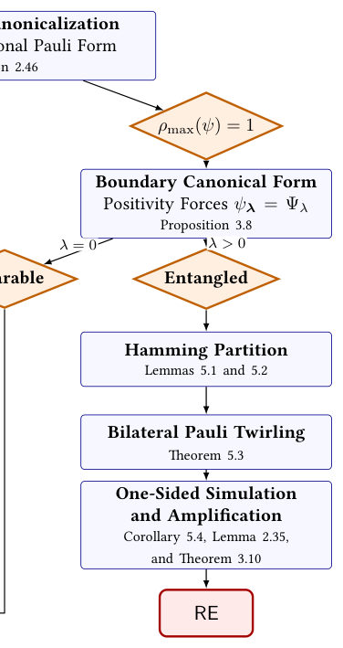
<figcaption class="paper-figure-caption"><b>Fig 1.</b> Figure 1: Roadmap for the proof of Theorem 1.1</figcaption>
</figure>
<figure class="paper-figure-card">
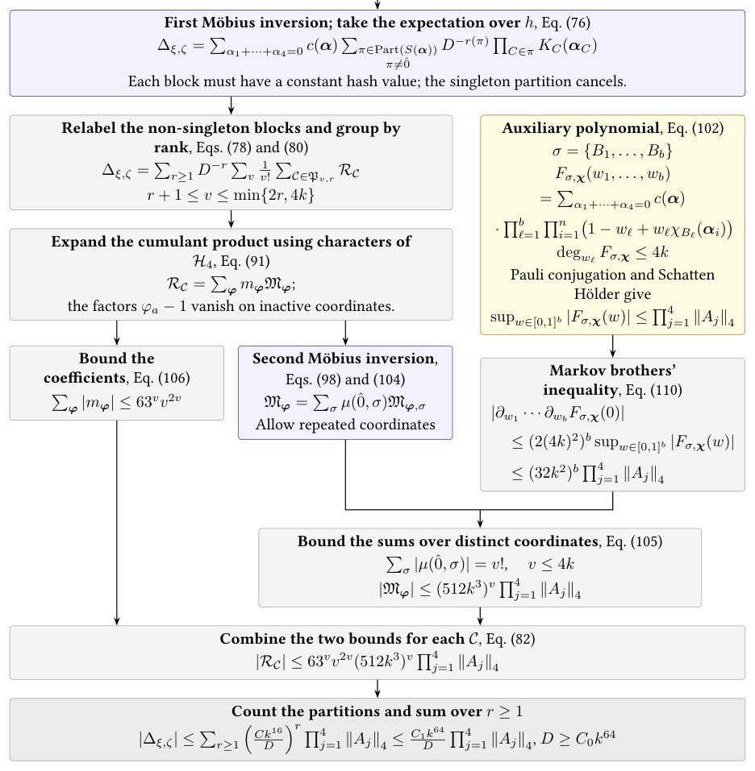
<figcaption class="paper-figure-caption"><b>Fig 2.</b> Figure 2: Proof overview for Lemma 4.24. The first M¨obius inversion evaluates the average over h; the second expresses sums over distinct coordinates in terms of the derivatives of an auxiliary polynomial.</figcaption>
</figure>
</div>

<p><strong>Summary.</strong> This work determines the exact computational power of quantum interactive proofs ($    ext{MIP}<em _max="\max">{\psi}$) when the shared resource is a noisy two-qubit state $\psi$. It proves a sharp dichotomy: the system is classically bounded ($   ext{NEXP}$) unless the state is highly entangled with perfect correlation ($
ho</em>$. The paper also introduces advanced mathematical tools for analyzing quantum measurements.}(\psi)=1$), in which case it achieves the full power of $  ext{RE</p>
<p><strong>Why it may be interesting.</strong> The development of the positivity-preserving low-degree approximation framework and Pauli folding offers general tools for analyzing quantum measurements and non-commutative structures, which are highly relevant to open quantum systems and quantum error correction.</p>
<details>
<summary>Detailed structure</summary>
<p><strong>Main problem.</strong> The paper establishes a complete dichotomy for the computational power of the quantum two-prover one-round proof system $ ext{MIP}_{\psi}[    ext{poly},  ext{poly}]$ based on the properties of the shared noisy quantum state $\psi$.</p>
<p><strong>Main result.</strong> The computational power collapses to $ ext{NEXP}=  ext{MIP}$ if the state $\psi$ is separable or has low quantum maximal correlation ($
ho_{\max}(\psi)&lt;1$); however, if $\psi$ is entangled and $
ho_{\max}(\psi)=1$, the power reaches $ ext{RE}$.</p>
<p><strong>Method.</strong> The proof develops novel techniques including a positivity-preserving low-degree approximation framework for quantum measurements and a dimension-reduction method called Pauli folding.</p>
<p><strong>Model / system.</strong> The model is the two-prover one-round interactive proof system ($   ext{MIP}_{\psi}$), where the provers share arbitrarily many copies of a fixed two-qubit state $\psi$ subject to unital noise.</p>
<p><strong>Key observables.</strong> Quantum maximal correlation $
ho_{\max}(\psi)$, separability of $\psi$, and the resulting complexity class ($   ext{NEXP}$ vs $ ext{RE}$).</p>
<p><strong>Important parameters / regimes.</strong> The structure of the shared state $\psi$ (two-qubit, maximally mixed marginals), and the bounds on question/answer lengths ($ ext{poly}$ vs $O(1)$).</p>
<p><strong>Assumptions / limitations.</strong> The analysis assumes the shared state $\psi$ has maximally mixed marginals and focuses on the dichotomy based on $
ho_{\max}(\psi)$ and entanglement.</p>
<p><strong>Paper structure.</strong> The paper first reviews previous results for constant-answer regimes, then establishes the complete dichotomy for polynomial answer lengths, and finally details the two main technical contributions: the low-degree approximation framework and Pauli folding.</p>
</details>
<details>
<summary>Abstract</summary>
<p>A recent work studied quantum two-prover one-round proof systems $\mathsf{MIP}^ψ[\text{poly},O(1)]$. It showed that when $ψ$ is a noisy EPR state with quantum maximal correlation $ρ_{\max}(ψ)<1$, the resulting complexity class is equivalent to $\mathsf{NEXP}=\mathsf{MIP}$. In contrast, $\mathsf{MIP}^{\text{EPR}}[\text{poly},O(1)]=\mathsf{RE}$. Not all noise, however, decreases quantum maximal correlation. A basic example is dephasing noise: a dephased EPR pair retain quantum maximal correlation $1$. In this work, we remove the constant-answer restriction and establish a complete dichotomy for $\mathsf{MIP}^ψ[\text{poly},\text{poly}]$, where the provers share arbitrarily many copies of EPR pairs subject to unital noise. Equivalently, let $ψ$ be a fixed two-qubit state with maximally mixed marginals. We prove that \[\mathsf{MIP}^ψ[\text{poly},\text{poly}]=\mathsf{MIP} =\mathsf{NEXP},~\text{if $ψ$ is separable or $ρ_{\max}(ψ)<1$};\]\[\mathsf{MIP}^ψ[\text{poly},\text{poly}]=\mathsf{MIP}^ψ[\text{poly},O(1)]=\mathsf{RE},\text{if $ψ$ is entangled and $ρ_{\max}(ψ)=1$.}\] Beyond the complexity classification, our proof develops two techniques that may be useful more broadly in quantum information and quantum complexity. First, we introduce a positivity-preserving low-degree approximation framework for quantum measurements: instead of truncating positive operators directly in the Pauli basis, we approximate suitable square-root factorizations, simultaneously achieving low Pauli degree, positivity, and global control over an entire POVM. Second, we develop a new dimension-reduction method, called Pauli folding, for low-degree positive operators. Its key ingredient is an almost-multiplicativity theorem for randomized Pauli hashing, which allows noncommutative products, positivity, and normalization to survive compression with controlled error.</p>
</details>
<p><sub><a href="#top">↑ back to top</a></sub></p>

<p><a id="paper-2609.40062"></a></p>
<h3 id="a-fourier-label-information-loss-barrier-for-dihedral-coset-algorithms"><a href="http://arxiv.org/abs/2609.40062v1">A Fourier-Label Information-Loss Barrier for Dihedral Coset Algorithms</a></h3>
<p><strong>Authors:</strong> Aparna Gupte, Seyoon Ragavan, Mark Zhandry<br>
<strong>Type:</strong> theory · <strong>Category:</strong> quantum information and computing · <strong>PDF:</strong> <a href="https://arxiv.org/pdf/2609.40062v1">https://arxiv.org/pdf/2609.40062v1</a><br>
<strong>Analysis basis:</strong> full PDF text, analyzed in chunks
<strong>Topic relevance:</strong> <code>quantum measurements</code> <strong>2/5</strong></p>
<div class="figure-strip-hint">↔ Scroll figures horizontally</div>
<div class="paper-figures-scroll">
<figure class="paper-figure-card">
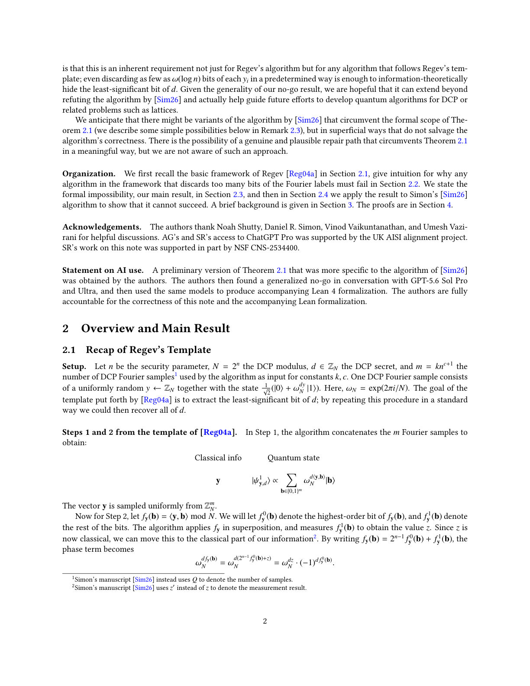
<figcaption class="paper-figure-caption"><b>Fig 1.</b> Low-resolution page preview, page 2</figcaption>
</figure>
<figure class="paper-figure-card">
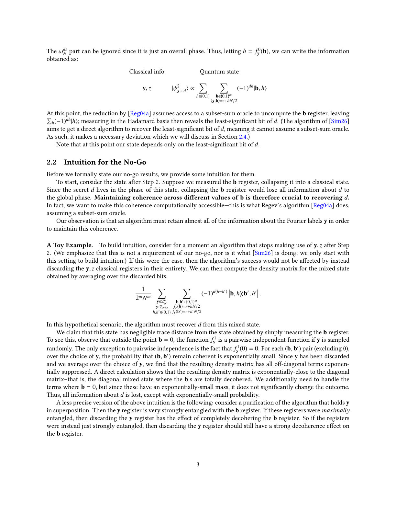
<figcaption class="paper-figure-caption"><b>Fig 2.</b> Low-resolution page preview, page 3</figcaption>
</figure>
<figure class="paper-figure-card">
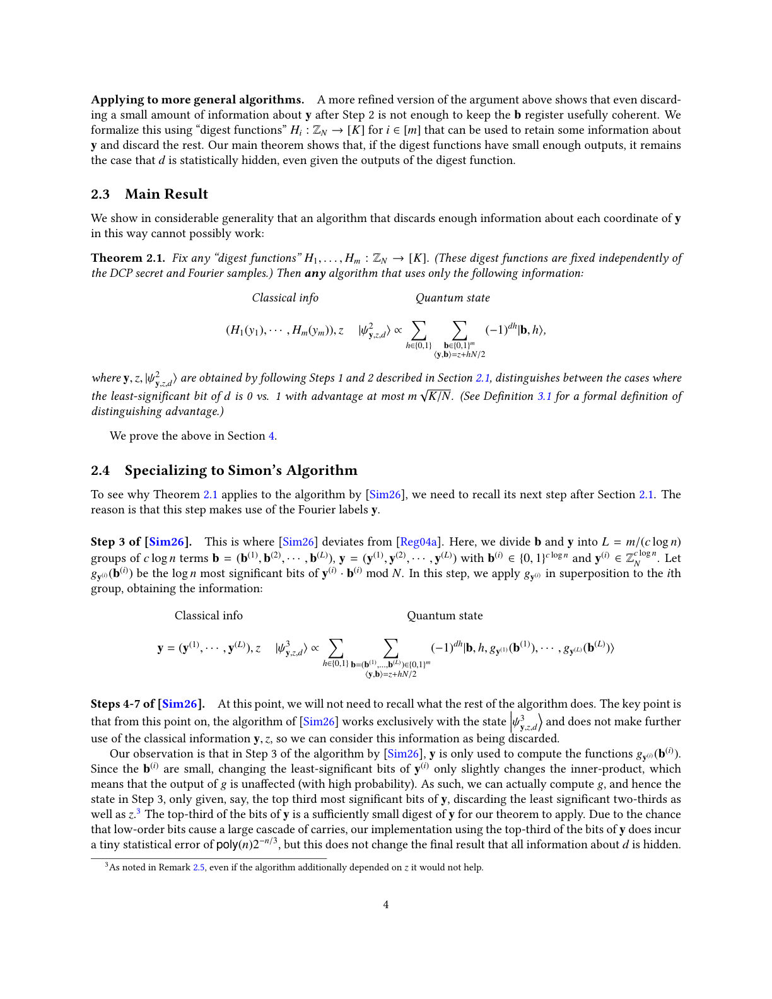
<figcaption class="paper-figure-caption"><b>Fig 3.</b> Low-resolution page preview, page 4</figcaption>
</figure>
<figure class="paper-figure-card">
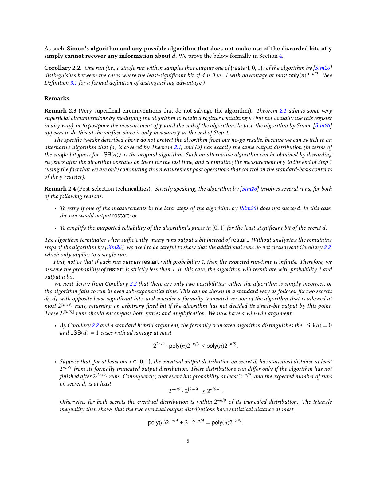
<figcaption class="paper-figure-caption"><b>Fig 4.</b> Low-resolution page preview, page 5</figcaption>
</figure>
<figure class="paper-figure-card">
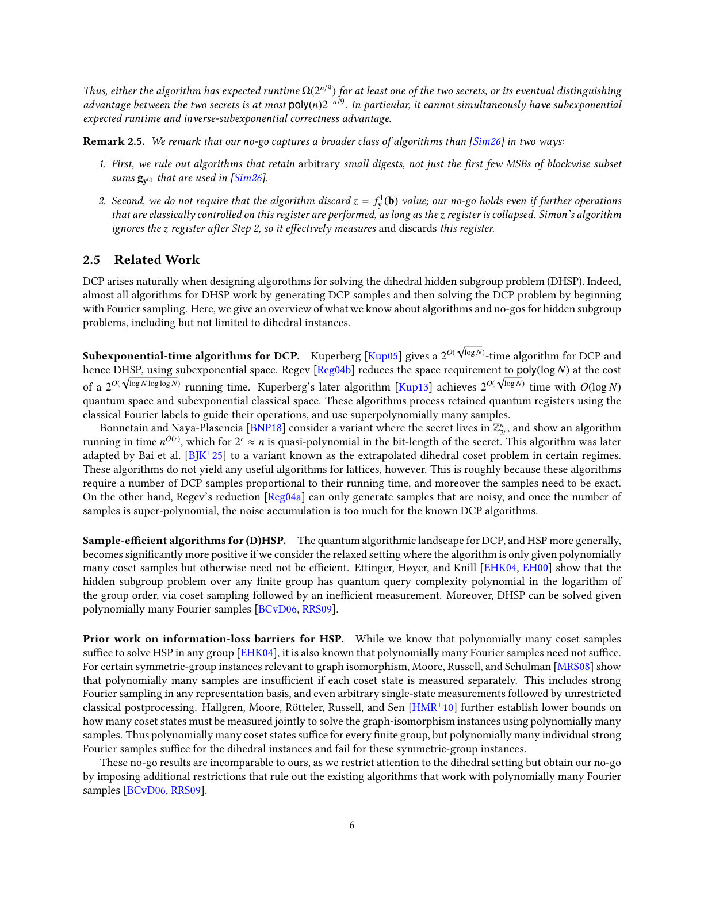
<figcaption class="paper-figure-caption"><b>Fig 5.</b> Low-resolution page preview, page 6</figcaption>
</figure>
</div>

<p><strong>Summary.</strong> This paper establishes a fundamental information-theoretic barrier for quantum algorithms solving the Dihedral Coset Problem (DCP). By analyzing the necessary information retained from Fourier labels, the authors prove that any algorithm discarding too much information cannot succeed. This result provides a powerful theoretical tool to assess the limits of quantum computation for structured problems.</p>
<p><strong>Why it may be interesting.</strong> While focused on abstract quantum algorithms, the rigorous analysis of information bottlenecks and the failure modes of quantum computation due to limited measurement data provides general theoretical insights applicable to understanding decoherence or measurement constraints in complex quantum systems.</p>
<details>
<summary>Detailed structure</summary>
<p><strong>Main problem.</strong> The paper establishes a no-go theorem for quantum algorithms attempting to solve the Dihedral Coset Problem (DCP). It specifically targets algorithms that rely on Fourier-sampling and subset-sum measurements.</p>
<p><strong>Main result.</strong> It proves that any algorithm following a specific template that discards $\omega(\log n)$ bits of information about the Fourier labels cannot solve DCP. This is shown to invalidate a recent algorithm by Simon.</p>
<p><strong>Method.</strong> The proof utilizes quantum information theory tools, including trace distance bounds and analyzing the effect of information loss (digest functions) on the quantum state fidelity.</p>
<p><strong>Model / system.</strong> The problem is framed abstractly as the Dihedral Coset Problem (DCP), which is a specific instance of a Hidden Subgroup Problem (HSP). The analysis is performed on the quantum state evolution governed by the Regev-style algorithm template.</p>
<p><strong>Key observables.</strong> The distinguishing advantage of the quantum algorithm between two possible outcomes (e.g., LSB($d$) = 0 vs. 1), measured via the trace distance.</p>
<p><strong>Important parameters / regimes.</strong> The amount of discarded information about the Fourier labels, specifically requiring the loss of $\omega(\log n)$ bits for the theorem to hold.</p>
<p><strong>Assumptions / limitations.</strong> The theorem applies strictly to algorithms following the Regev Fourier-sampling and subset-sum-measurement template. The analysis relies on bounding the error introduced by using only 'digest functions' of the Fourier labels.</p>
<p><strong>Paper structure.</strong> The paper first introduces the DCP and the Regev template. It then develops the core no-go theorem by bounding the distinguishability based on information loss. The main body applies this theorem to analyze and bound the advantage of Simon's algorithm for DCP.</p>
</details>
<details>
<summary>Abstract</summary>
<p>We establish a no-go theorem for a broad class of quantum algorithms for the dihedral coset problem (DCP). We consider the Fourier-sampling and subset-sum-measurement template proposed by Regev (SIAM Journal on Computing, 2004), which is one of the main approaches to solving DCP. Suppose that, after measuring the lower $n-1$ bits of the subset sum, the algorithm discards any $ω(\log n)$ bits from each of the Fourier labels. Then we prove that the algorithm cannot succeed in solving DCP. This shows that any algorithm following this template must make extensive use of the Fourier labels, and thus serves as a useful guide for developing algorithms for DCP.   As a main application, we show that the recent algorithm by Simon (IACR ePrint:2026/1591, August 11 2026) does not solve DCP. We show that after the subset-sum measurement, this algorithm can be implemented (up to exponentially-small error) using only the most-significant third of the Fourier labels, and is therefore subject to our general no-go theorem. To help with verifiability, we release Lean 4 code for our results.</p>
</details>
<p><sub><a href="#top">↑ back to top</a></sub></p>

<p><a id="paper-2609.40307"></a></p>
<h3 id="a-fully-gaussian-quantum-steins-lemma"><a href="http://arxiv.org/abs/2609.40307v1">A fully Gaussian quantum Stein's lemma</a></h3>
<p><strong>Authors:</strong> Filippo Girardi, Jacopo Rizzo, Leah Turner, Gerardo Adesso, Ludovico Lami<br>
<strong>Type:</strong> theory · <strong>Category:</strong> quantum information and computing · <strong>PDF:</strong> <a href="https://arxiv.org/pdf/2609.40307v1">https://arxiv.org/pdf/2609.40307v1</a><br>
<strong>Analysis basis:</strong> full PDF text, analyzed in chunks
<strong>Topic relevance:</strong> <code>quantum measurements</code> <strong>2/5</strong></p>
<div class="figure-strip-hint">↔ Scroll figures horizontally</div>
<div class="paper-figures-scroll">
<figure class="paper-figure-card">
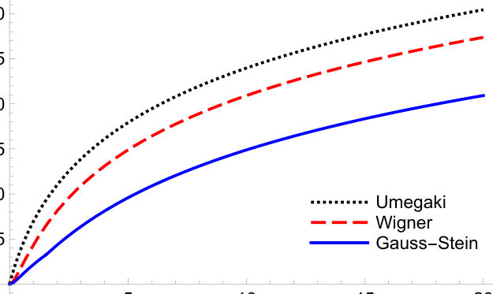
<figcaption class="paper-figure-caption"><b>Fig 1.</b> FIG. 1: Discriminating between a single-mode vacuum state and a single-mode thermal state with mean photon number 𝜈. The black dotted line is the Umegaki relative entropy corresponding to the unrestricted Stein exponent. The dashed red curve is the classical Wigner relative entropy upper bound. The blue line is the Gaussian Stein exponent.</figcaption>
</figure>
</div>

<p><strong>Summary.</strong> This paper derives a single-letter formula for the Gaussian Stein exponent, which quantifies the asymptotic distinguishability of multi-mode bosonic Gaussian states. It proves that this exponent separates into independent contributions from the first and second moments. The results establish conditions under which collective measurements do not provide an asymptotic advantage over optimized single-copy measurements.</p>
<p><strong>Why it may be interesting.</strong> This work provides a rigorous, single-letter formula for a key measure of distinguishability in bosonic quantum systems, which is crucial for understanding the limits of quantum communication and sensing protocols.</p>
<details>
<summary>Detailed structure</summary>
<p><strong>Main problem.</strong> The paper investigates the asymptotic distinguishability of multi-mode bosonic Gaussian quantum states under restricted collective Gaussian measurements.</p>
<p><strong>Main result.</strong> The Gaussian Stein exponent factorizes into independent first-moment and second-moment contributions, and additivity of the covariance term is established under specific structural conditions on the covariance matrices.</p>
<p><strong>Method.</strong> The analysis uses asymptotic limits ($n 	o \infty$) and techniques involving log-determinant matrix inequalities and symplectic geometry to characterize the rate of distinguishability.</p>
<p><strong>Model / system.</strong> The system involves multi-mode bosonic Gaussian states, characterized by their first moments (displacements) and quantum covariance matrices (QCMs). The testing framework uses collective Gaussian measurements.</p>
<p><strong>Key observables.</strong> Gaussian Stein exponent ($ ext{Stein}_G$), Gaussian-measured relative entropy ($D_G$), and the error probabilities ($\alpha_n, eta_n$).</p>
<p><strong>Important parameters / regimes.</strong> The number of copies ($n$), the covariance matrices ($V, W$), and the displacement vectors ($s, t$).</p>
<p><strong>Assumptions / limitations.</strong> The analysis relies heavily on asymptotic limits ($n 	o \infty$) and establishing sufficient conditions for additivity based on the structure of the covariance matrices.</p>
<p><strong>Figures summary.</strong> Figure 1 compares the Umegaki relative entropy, the classical Wigner relative entropy upper bound, and the Gaussian Stein exponent for discriminating between a vacuum and a thermal single-mode state.</p>
<p><strong>Paper structure.</strong> The paper first establishes the factorization of the Stein exponent into moment contributions. It then analyzes the additivity of the covariance term, providing sufficient conditions (Theorem 2/7) for this additivity. Finally, it derives the single-letter expression for the exponent, showing the separation of the two moment contributions.</p>
</details>
<details>
<summary>Abstract</summary>
<p>A central yet mysterious problem in quantum information is the asymptotic distinguishability of quantum states under restricted measurements. Here we look at asymptotic asymmetric hypothesis testing for general multi-mode bosonic Gaussian states restricted to arbitrary collective Gaussian measurements. We establish a single-letter formula for the Stein exponent for many pairs of states, featuring two distinct contributions, corresponding to first and second moments, respectively. Remarkably, the Gaussian-measured relative entropy exhibits genuine non-additivity, but the only effect of additivity violations is to asymptotically decouple first and second moments. We prove this by establishing sufficient conditions for additivity of the second-moment term via novel log-determinant matrix inequalities. Our results not only identify a single-letter expression for the Gaussian Stein exponent in a wide range of practical situations, but also rule out any possible advantage from collective Gaussian measurements when considering centred Gaussian states.</p>
</details>
<p><sub><a href="#top">↑ back to top</a></sub></p>

<p><a id="paper-2609.40182"></a></p>
<h3 id="a-mixing-time-method-for-estimating-the-sample-complexity-of-quantum-state-discrimination"><a href="http://arxiv.org/abs/2609.40182v1">A mixing time method for estimating the sample complexity of quantum state discrimination</a></h3>
<p><strong>Authors:</strong> Juntai Zhou, Felix Leditzky<br>
<strong>Type:</strong> theory · <strong>Category:</strong> quantum information and computing · <strong>PDF:</strong> <a href="https://arxiv.org/pdf/2609.40182v1">https://arxiv.org/pdf/2609.40182v1</a><br>
<strong>Analysis basis:</strong> full PDF text, analyzed in chunks
<strong>Topic relevance:</strong> <code>quantum measurements</code> <strong>2/5</strong></p>
<div class="figure-strip-hint">↔ Scroll figures horizontally</div>
<div class="paper-figures-scroll">
<figure class="paper-figure-card">
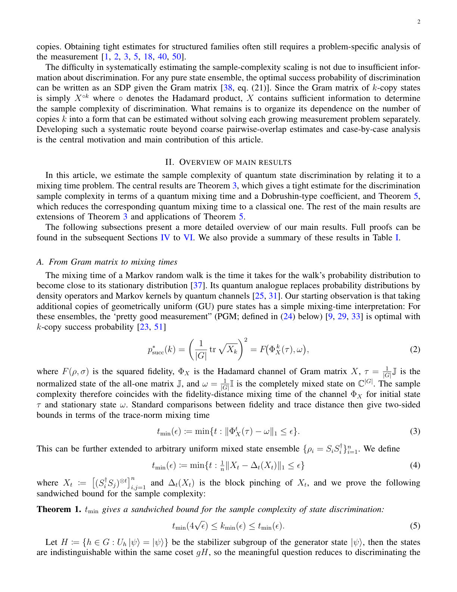
<figcaption class="paper-figure-caption"><b>Fig 1.</b> Low-resolution page preview, page 2</figcaption>
</figure>
<figure class="paper-figure-card">
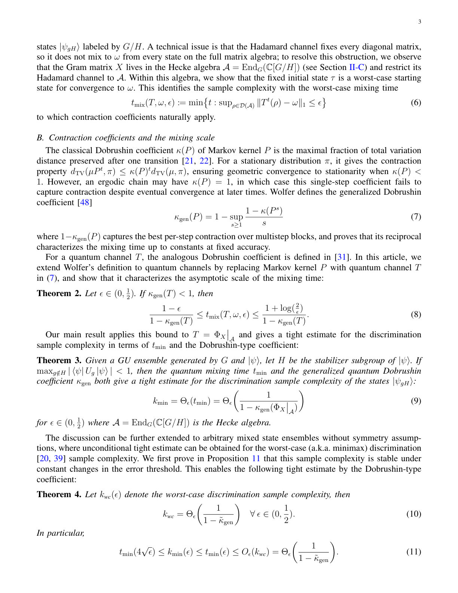
<figcaption class="paper-figure-caption"><b>Fig 2.</b> Low-resolution page preview, page 3</figcaption>
</figure>
<figure class="paper-figure-card">
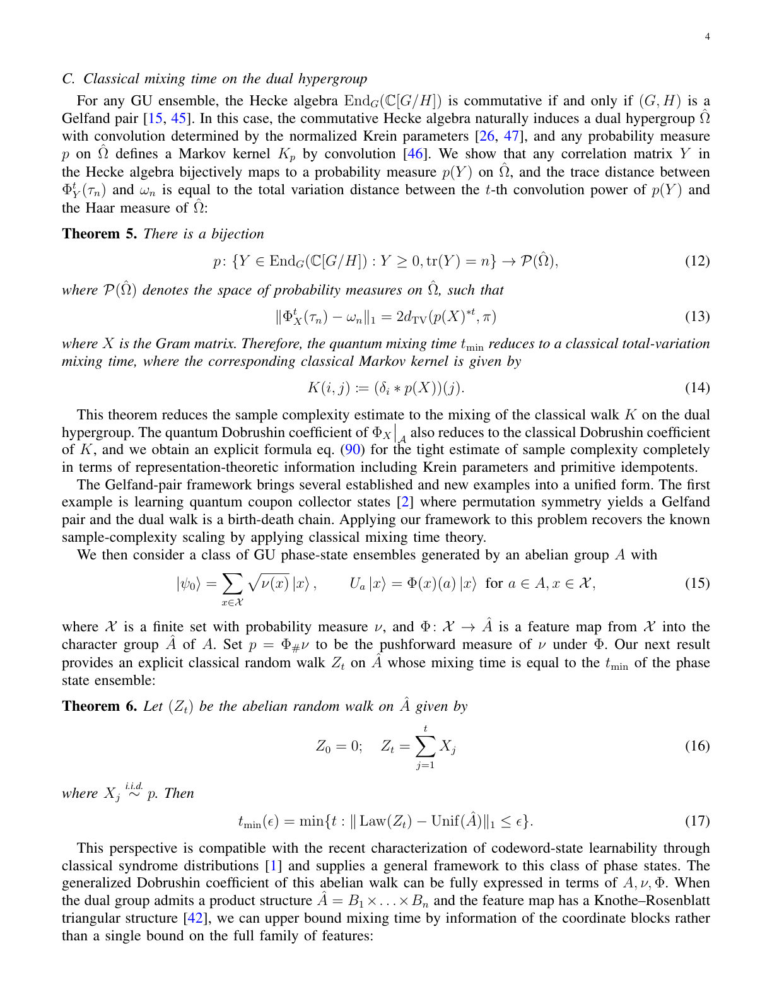
<figcaption class="paper-figure-caption"><b>Fig 3.</b> Low-resolution page preview, page 4</figcaption>
</figure>
<figure class="paper-figure-card">
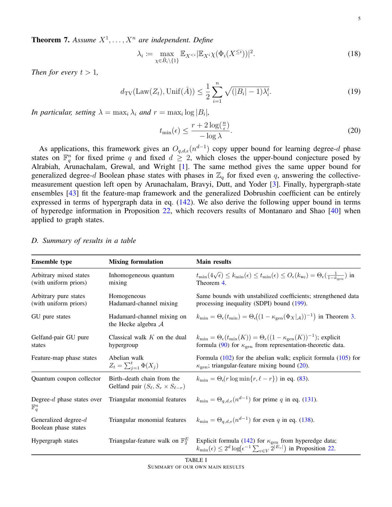
<figcaption class="paper-figure-caption"><b>Fig 4.</b> Low-resolution page preview, page 5</figcaption>
</figure>
<figure class="paper-figure-card">
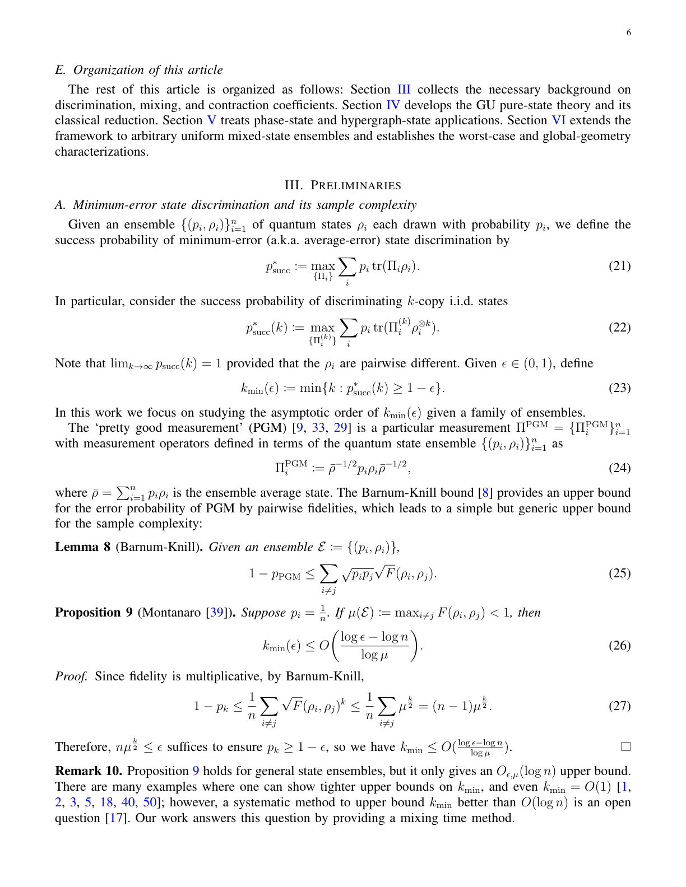
<figcaption class="paper-figure-caption"><b>Fig 5.</b> Low-resolution page preview, page 6</figcaption>
</figure>
</div>

<p><strong>Summary.</strong> This work introduces a mixing time method to estimate the sample complexity for quantum state discrimination. By relating the problem to the mixing time of a quantum random walk, the authors derive tight bounds using generalized Dobrushin coefficients. This framework successfully estimates complexity for diverse quantum ensembles, including phase and hypergraph states.</p>
<p><strong>Why it may be interesting.</strong> It provides powerful, mathematically rigorous tools (mixing times, Dobrushin coefficients) to estimate fundamental resource requirements (sample complexity) in quantum information tasks, bridging quantum dynamics with classical information theory bounds.</p>
<details>
<summary>Detailed structure</summary>
<p><strong>Main problem.</strong> The paper develops a method to estimate the sample complexity required for minimum-error quantum state discrimination.</p>
<p><strong>Main result.</strong> The sample complexity is shown to be tightly bounded by quantum mixing times and generalized Dobrushin coefficients, providing explicit estimates for various state ensembles.</p>
<p><strong>Method.</strong> The core method involves relating the state discrimination problem to the mixing time of a quantum Markov random walk, utilizing concepts from harmonic analysis and representation theory.</p>
<p><strong>Model / system.</strong> The analysis covers geometrically uniform pure state ensembles, general mixed state ensembles, and specific structured ensembles like phase states and hypergraph states.</p>
<p><strong>Key observables.</strong> Sample complexity ($k_{\min}$), quantum mixing time ($t_{\min}$), and the generalized Dobrushin coefficient ($\kappa_{	ext{gen}}$).</p>
<p><strong>Important parameters / regimes.</strong> Error parameter ($\epsilon$), the structure of the generating group $G$, and the stabilizer subgroup $H$.</p>
<p><strong>Assumptions / limitations.</strong> The initial analysis focuses on uniform prior ensembles, but the framework is extended to arbitrary mixed states. A reduction to classical mixing time requires the generating group to form a Gelfand pair.</p>
<p><strong>Figures summary.</strong> A summary table (TABLE I) compiles results linking various ensemble types (e.g., Gelfand-pair, Feature-map phase states) to their respective mixing formulations and complexity bounds.</p>
<p><strong>Paper structure.</strong> The paper builds from the general problem of state discrimination to specific cases (GU pure states, Gelfand pairs), deriving bounds using mixing times, and finally extending the analysis to arbitrary mixed states using strengthened data processing inequalities.</p>
</details>
<details>
<summary>Abstract</summary>
<p>We develop a mixing time method for estimating the sample complexity of quantum state discrimination. We start with considering the minimum-error discrimination of geometrically uniform pure state ensembles, and prove that its sample complexity has a tight estimate given by a quantum homogeneous mixing time [George et al., 2026] and a quantum version of the generalized Dobrushin coefficient [Wolfer, 2020]. This quantum mixing time further reduces to a classical one when the generating group $G$ forms a Gelfand pair with the stabilizer subgroup $H$ of the generator state. In this case the generalized Dobrushin coefficient can be fully expressed by representation-theoretic quantities of the commutative Hecke algebra $\operatorname{End}_G(\mathbb C[G/H])$. In particular, this method reduces the sample complexity estimation of learning quantum coupon collector states [Arunachalam et al., 2020] and learning phase states to classical mixing time problems. We apply this framework to answer the open problems of learning degree-$d$ phase states over $\mathbb F_q$ in [Alrabiah et al., 2026] and generalized Boolean phase states over $\mathbb Z_q$ [Arunachalam et al., 2023]. The framework also applies to hypergraph state ensembles, giving estimates expressed fully in terms of hypergraph data and recovering estimates for graph state ensembles in [Montanaro and Shao, 2022]. Finally, we extend the discussion to arbitrary mixed state ensembles with uniform priors, prove a sandwiched bound for minimum-error discrimination sample complexity by a quantum weakly mixing time, and provide a tight estimate for the minimax discrimination sample complexity from [D'Ariano et al., 2005] by a Dobrushin-type coefficient. We also discuss the method of strengthened data processing inequality [Gao and Rouz{é}, 2022] and give an upper bound in terms of a strengthened data processing inequality constant.</p>
</details>
<p><sub><a href="#top">↑ back to top</a></sub></p>

<p><a id="paper-2609.39835"></a></p>
<h3 id="a-self-tallying-quantum-anonymous-voting-protocol-for-multiple-selection-elections"><a href="http://arxiv.org/abs/2609.39835v1">A self-tallying quantum anonymous voting protocol for multiple-selection elections</a></h3>
<p><strong>Authors:</strong> Guang-Bao Xu, Meng-Na Li, Yu-Guang Yang, Dong-Huan Jiang<br>
<strong>Type:</strong> theory · <strong>Category:</strong> quantum information and computing · <strong>PDF:</strong> <a href="https://arxiv.org/pdf/2609.39835v1">https://arxiv.org/pdf/2609.39835v1</a><br>
<strong>Analysis basis:</strong> full PDF text, analyzed in chunks
<strong>Topic relevance:</strong> <code>quantum measurements</code> <strong>2/5</strong></p>
<div class="figure-strip-hint">↔ Scroll figures horizontally</div>
<div class="paper-figures-scroll">
<figure class="paper-figure-card">
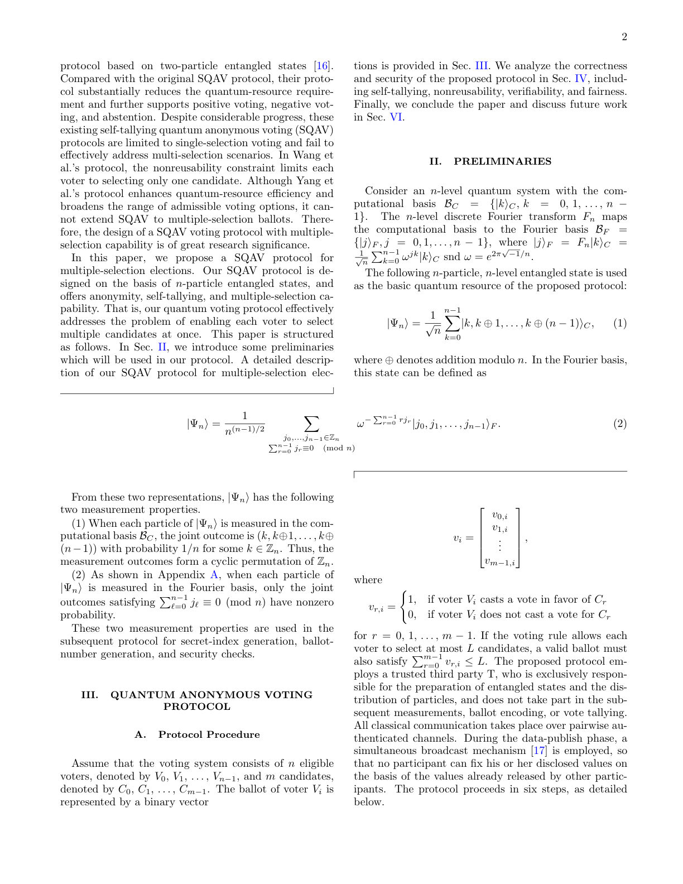
<figcaption class="paper-figure-caption"><b>Fig 1.</b> Low-resolution page preview, page 2</figcaption>
</figure>
<figure class="paper-figure-card">
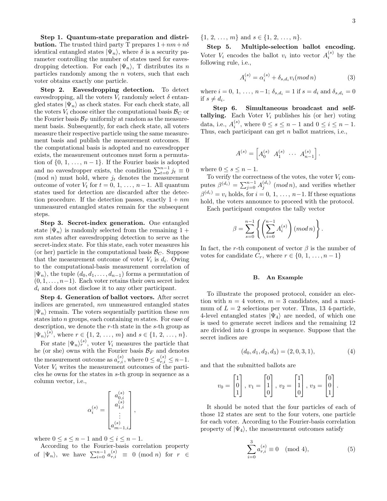
<figcaption class="paper-figure-caption"><b>Fig 2.</b> Low-resolution page preview, page 3</figcaption>
</figure>
<figure class="paper-figure-card">
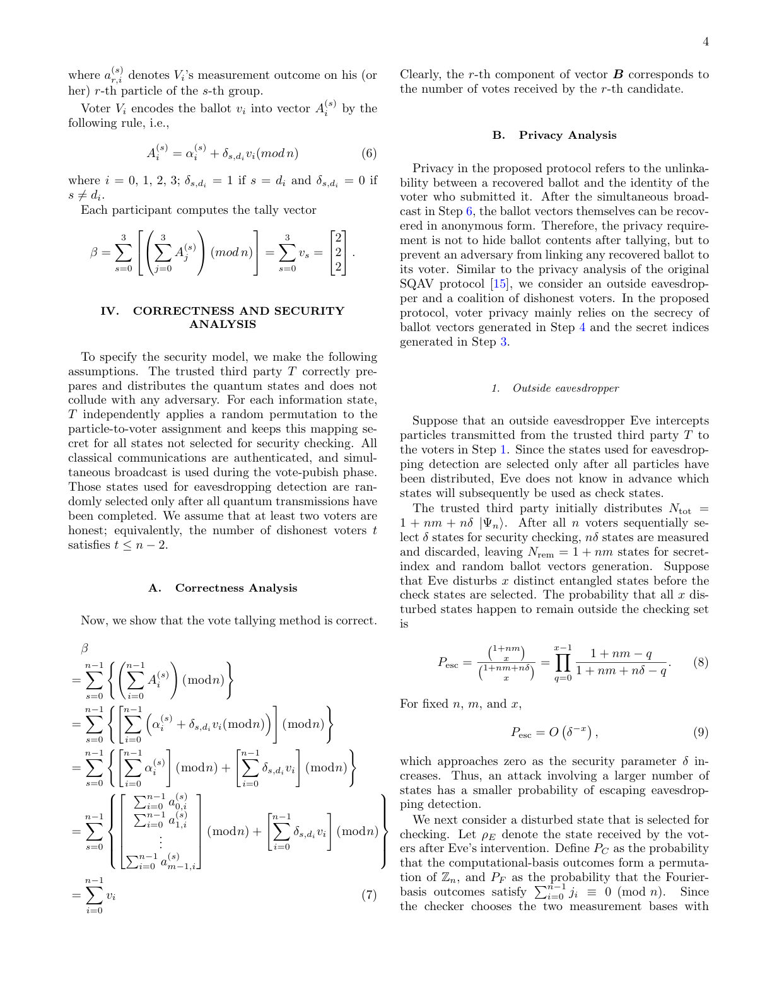
<figcaption class="paper-figure-caption"><b>Fig 3.</b> Low-resolution page preview, page 4</figcaption>
</figure>
<figure class="paper-figure-card">
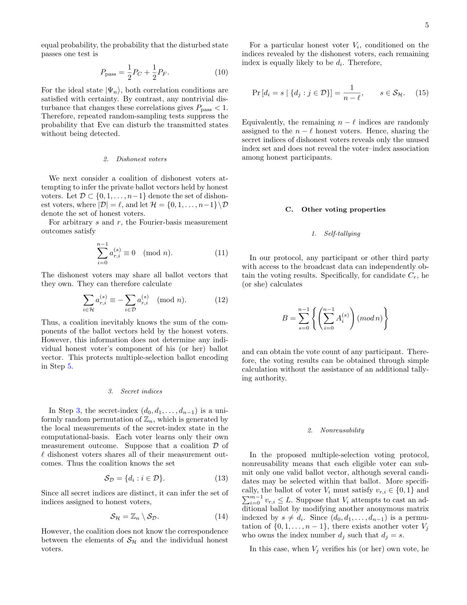
<figcaption class="paper-figure-caption"><b>Fig 4.</b> Low-resolution page preview, page 5</figcaption>
</figure>
<figure class="paper-figure-card">
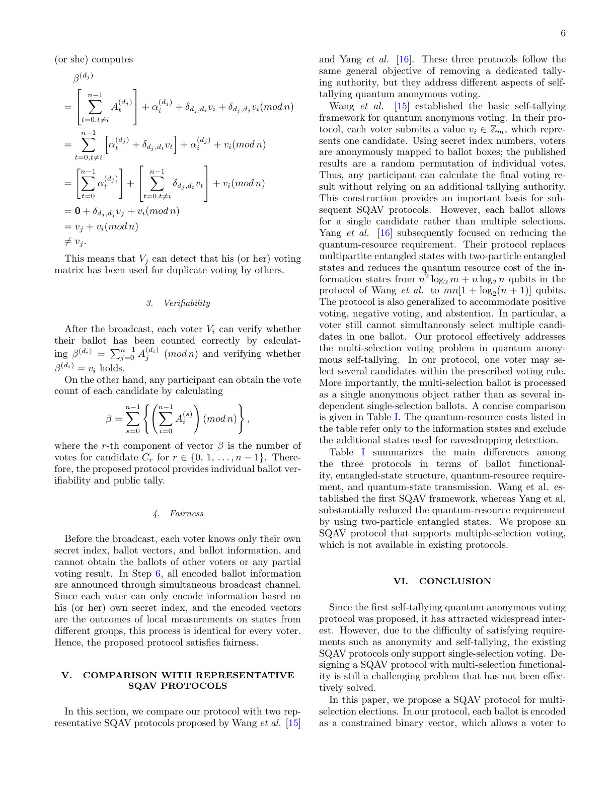
<figcaption class="paper-figure-caption"><b>Fig 5.</b> Low-resolution page preview, page 6</figcaption>
</figure>
</div>

<p><strong>Summary.</strong> This paper introduces a quantum cryptographic protocol for anonymous voting that extends previous work to support multiple-selection voting. It utilizes $n$-particle entangled states and complex measurement sequences in both computational and Fourier bases to ensure privacy and verifiable tallying. The resulting protocol satisfies key security properties like self-tallying and nonreusability.</p>
<p><strong>Why it may be interesting.</strong> While focused on cryptography, the underlying resource—the manipulation and measurement of highly entangled quantum states—is a core topic in quantum information theory, relevant to quantum communication protocols.</p>
<details>
<summary>Detailed structure</summary>
<p><strong>Main problem.</strong> To develop a Self-tallying Quantum Anonymous Voting (SQAV) protocol that successfully supports multi-selection voting, overcoming the limitations of existing protocols restricted to single-selection voting.</p>
<p><strong>Main result.</strong> The authors propose a novel SQAV protocol using $n$-particle entangled states that achieves multi-selection voting while maintaining self-tallying, nonreusability, verifiability, and fairness.</p>
<p><strong>Method.</strong> The protocol involves distributing entangled states, followed by sequential measurements in both computational and Fourier bases to generate secret indices and encode the multi-selection ballot vector.</p>
<p><strong>Model / system.</strong> The protocol is built upon $n$-particle entangled states, $|\Psi_n
angle$, which are analyzed using properties derived from the Discrete Fourier Transform (DFT) in the context of quantum information theory.</p>
<p><strong>Key observables.</strong> The total tally vector $eta$ is the key observable, which allows any participant to calculate the count for each candidate. Verification involves checking $eta(d_i) = v_i$.</p>
<p><strong>Important parameters / regimes.</strong> The security parameter $\delta$ governs the probability of undetected eavesdropping, which decreases exponentially with $\delta$.</p>
<p><strong>Assumptions / limitations.</strong> The protocol assumes the existence of a trusted third party (T) for state preparation and distribution, and relies on pairwise authenticated classical channels.</p>
<p><strong>Figures summary.</strong> Not specified by the notes.</p>
<p><strong>Paper structure.</strong> The paper details the protocol in several steps: state preparation, eavesdropping detection using basis measurements, secret-index generation, and finally, the encoding and tallying of the multi-selection ballot vector using specific measurement correlations.</p>
</details>
<details>
<summary>Abstract</summary>
<p>Self-tallying quantum anonymous voting (SQAV) has drawn considerable attention since it was proposed. However, constrained by design challenges, all existing protocols only accommodate single-selection voting and cannot support multi-selection voting. In this paper, we propose a SQAV protocol with multi-selection voting functionality. In our protocol, $nm$ $n$-particle entangled states are equally divided into $n$ groups, and the $n$ particles in each entangled state are delivered to $n$ voters, one particle per voter. Each voter obtains $n$ voting vectors by sequentially measuring all his (or her) particles that belong to $n$ different group, and then encodes his or her voting information into the vector corresponding to the secret index. Due to entanglement correlation, each voter can verify whether his or her ballot is correct through computation, while any participant can obtain the vote count for each candidate through computation. Our protocol satisfies self-tallying, nonreusability, verifiability, and fairness.</p>
</details>
<p><sub><a href="#top">↑ back to top</a></sub></p>

<p><a id="paper-2609.40001"></a></p>
<h3 id="an-exponential-query-advantage-from-access-to-stinespring-dilation-unitaries-in-quantum-channel-learning"><a href="http://arxiv.org/abs/2609.40001v1">An exponential query advantage from access to Stinespring dilation unitaries in quantum channel learning</a></h3>
<p><strong>Authors:</strong> Manaki Arihara, Satoshi Yoshida, Philip Taranto, Mio Murao<br>
<strong>Type:</strong> theory · <strong>Category:</strong> quantum information and computing · <strong>PDF:</strong> <a href="https://arxiv.org/pdf/2609.40001v1">https://arxiv.org/pdf/2609.40001v1</a><br>
<strong>Analysis basis:</strong> full PDF text, analyzed in chunks
<strong>Topic relevance:</strong> <code>quantum measurements</code> <strong>2/5</strong></p>
<div class="figure-strip-hint">↔ Scroll figures horizontally</div>
<div class="paper-figures-scroll">
<figure class="paper-figure-card">
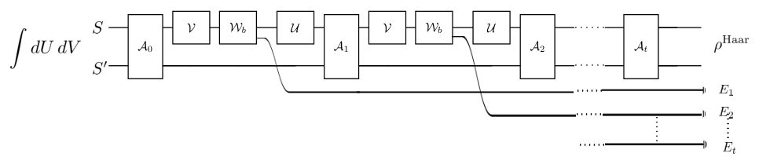
<figcaption class="paper-figure-caption"><b>Fig 1.</b> Figure 1: Original t-query algorithm with Haar-random unitary channels. The unitary channels V and U are independently chosen from the Haar measure and the same unitary channels are used in every query to the composite oracle U ◦Wb ◦V. The quantum operations A0, . . . , At are arbitrary operations independent of the oracles U, Wb and V, and represent the intermediate processing of the algorithm on the target system S and the ancilla system S′. Each invocation of Wb produces an environment register Ei, which is traced out at the end. Averaging the resulting output state over U and V gives ρb(t).</figcaption>
</figure>
<figure class="paper-figure-card">
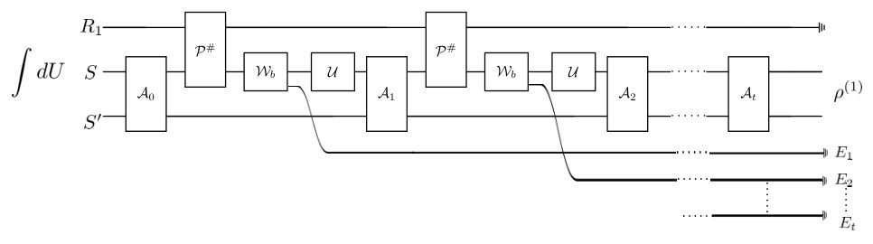
<figcaption class="paper-figure-caption"><b>Fig 2.</b> Figure 2: First hybrid in the path-recording argument. Every Haar-random unitary channel V in Fig. 1 is replaced by the restricted path-recording oracle P#, while U remains Haar-random. The oracle P# acts jointly on the target system S and the relation register R1, recording the relation xi 7→(αi, ui) generated at the i-th query. The operations A0, . . . , At, the channel Wb, and the environment registers Ei are not changed from the original algorithm. After tracing out R1 and the environment system and averaging over the remaining Haar-random unitary U, the circuit yields the first hybrid state ρ(1) b (t).</figcaption>
</figure>
<figure class="paper-figure-card">
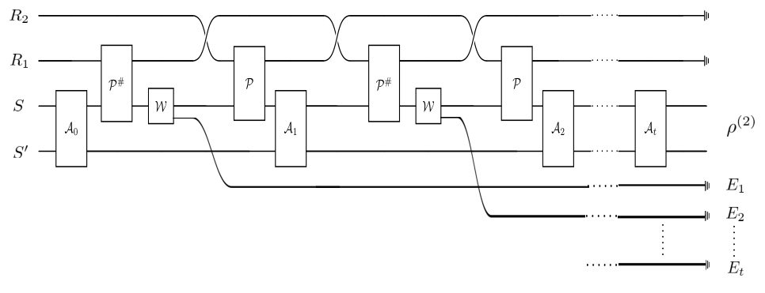
<figcaption class="paper-figure-caption"><b>Fig 3.</b> Figure 3: Second hybrid in the path-recording argument. In addition to replacing V by the restricted path-recording oracle P#, every Haar-random unitary channel U is replaced by the standard path- recording oracle P. At the i-th query, P# records the transition xi 7→(αi, ui) in the relation register R1, Wb produces the corresponding environment state |wb,αi⟩Ei, and P records the subsequent transition (αi, ui) 7→zi in the relation register R2. Thus, after t queries, R1 and R2 store the relations R1(⃗x, ⃗α, ⃗u) and R2(⃗α, ⃗u, ⃗z), respectively. Tracing out the two relation registers and the environment system yields the second hybrid state ρ(2) b (t).</figcaption>
</figure>
</div>

<p><strong>Summary.</strong> This paper proves an exponential separation in query complexity for estimating the Optimal Average Gate Fidelity (OAGF) of a quantum channel. By comparing black-box access to the channel versus access to its Stinespring dilation unitary, the authors show that the former requires $\Omega(\sqrt{d})$ queries, while the latter requires only polynomially many queries. This highlights the immense computational advantage gained by understanding the underlying system-environment coupling.</p>
<p><strong>Why it may be interesting.</strong> This work provides a fundamental resource-theoretic result showing that knowing the system-environment joint evolution (the unitary) provides exponentially more computational power for quantum process characterization than simply querying the channel output directly.</p>
<details>
<summary>Detailed structure</summary>
<p><strong>Main problem.</strong> The paper aims to demonstrate an exponential separation in query complexity for estimating an intrinsic property of a quantum channel (the Optimal Average Gate Fidelity, OAGF) depending on the access model.</p>
<p><strong>Main result.</strong> Access to the Stinespring dilation unitary and its inverse allows for the estimation of OAGF with polynomially many queries, whereas black-box access requires $\Omega(\sqrt{d})$ queries, establishing an exponential separation.</p>
<p><strong>Method.</strong> The analysis uses quantum information theory tools, including Quantum Singular Value Transformation (QSVT) and lower-bound arguments based on distinguishing quantum ensembles, to compare query complexity.</p>
<p><strong>Model / system.</strong> The study concerns quantum channels $E: \mathcal{L}(H) 	o \mathcal{L}(H)$ acting on a $d$-dimensional system Hilbert space $H$. The comparison is between direct black-box access to $E$ and access to its Stinespring dilation unitary $U_m$ and its inverse.</p>
<p><strong>Key observables.</strong> Optimal Average Gate Fidelity (OAGF) and Optimal Entanglement Fidelity (OEF).</p>
<p><strong>Important parameters / regimes.</strong> System dimension $d$, Kraus rank $r$ (assumed constant), and the required additive accuracy $\epsilon$.</p>
<p><strong>Assumptions / limitations.</strong> The separation holds for constant Kraus rank and polynomially bounded environment dimensions. The lower bound relies on the existence of a universal simulator.</p>
<p><strong>Figures summary.</strong> Figure 3 details the state evolution using path-recording oracles $P$ and $P^\#$ to analyze the difference between states derived from the dilation unitary access.</p>
<p><strong>Paper structure.</strong> The paper establishes the problem by defining the OAGF and comparing two access models. It derives an upper bound using the dilation unitary (via QSVT) and then establishes a lower bound using channel discrimination arguments, culminating in the proof of the exponential separation.</p>
</details>
<details>
<summary>Abstract</summary>
<p>We present a learning task for quantum channels that exhibits an exponential separation in query complexity (in terms of the number of qubits) between two access models: i) black-box channel access and ii) access to a Stinespring dilation unitary of the channel along with its inverse. We consider the task of learning how close the unknown channel is to the set of unitary channels. This is characterized by the \textit{optimal average gate fidelity (OAGF)}, defined as the average gate fidelity maximized over all unitary channels. For constant Kraus rank and a dilation environment of dimension $\operatorname{polylog}(d)$, we provide an algorithm that estimates the OAGF to fixed additive accuracy using $\operatorname{polylog}(d)$ queries to the Stinespring dilation unitary and its inverse. In contradistinction, under the black-box access model, this estimation requires at least $Ω(\sqrt{d})$ queries, even for channels of constant Kraus rank and constant additive accuracy. As a corollary, we rule out a universal simulator that uses only $\operatorname{poly}(\log d,q)$ queries to the unknown channel to approximate the output of arbitrary $q$-query algorithms with access to a randomly-sampled Stinespring dilation unitary and its inverse, even to sufficiently small constant error. These results demonstrate that access to the system-environment joint evolution and its inverse can provide an exponential advantage in estimating an intrinsic property of a quantum channel.</p>
</details>
<p><sub><a href="#top">↑ back to top</a></sub></p>

<p><a id="paper-2609.39234"></a></p>
<h3 id="breaking-the-bounded-entanglement-barrier-for-quantum-position-verification"><a href="http://arxiv.org/abs/2609.39234v1">Breaking the Bounded Entanglement Barrier for Quantum Position Verification</a></h3>
<p><strong>Authors:</strong> Amit Behera, Vipul Goyal<br>
<strong>Type:</strong> theory · <strong>Category:</strong> quantum information and computing · <strong>PDF:</strong> <a href="https://arxiv.org/pdf/2609.39234v1">https://arxiv.org/pdf/2609.39234v1</a><br>
<strong>Analysis basis:</strong> full PDF text, analyzed in chunks
<strong>Topic relevance:</strong> <code>quantum measurements</code> <strong>2/5</strong></p>
<div class="figure-strip-hint">↔ Scroll figures horizontally</div>
<div class="paper-figures-scroll">
<figure class="paper-figure-card">

<figcaption class="paper-figure-caption"><b>Fig 1.</b> Figure 1: Prior QPV results and our finite-slot instantiation.</figcaption>
</figure>
</div>

<p><strong>Summary.</strong> This paper presents a breakthrough in Quantum Position Verification (QPV) by circumventing a known entanglement barrier. By utilizing the mathematical structure of continuous time, the authors construct a secure protocol that requires significantly fewer resources from the honest parties compared to the adversary. This work establishes a new paradigm for resource management in quantum verification protocols.</p>
<p><strong>Why it may be interesting.</strong> The concept of breaking resource barriers in fundamental quantum tasks like verification is highly relevant to quantum cryptography and secure quantum computation protocols.</p>
<details>
<summary>Detailed structure</summary>
<p><strong>Main problem.</strong> The paper addresses the challenge of Quantum Position Verification (QPV), specifically overcoming the theoretical barrier that previously limited security when adversaries possessed large amounts of pre-shared entanglement.</p>
<p><strong>Main result.</strong> The authors demonstrate a BB84-based protocol secure in the idealized continuous-time model against finite LOCC adversaries, and in the discrete-time model, they achieve a resource gap where honest party resources can be significantly smaller than adversarial resources.</p>
<p><strong>Method.</strong> The core technique involves utilizing the continuous nature of time (real-valued parameters) to sample challenge messages, which prevents adversaries from exploiting finite pre-shared entanglement across all possible time slots.</p>
<p><strong>Model / system.</strong> The work analyzes QPV using both an idealized continuous-time model (where time is a real parameter) and a practical discrete-time model involving $m$ rounds and $s$ slots.</p>
<p><strong>Key observables.</strong> Success probability of the adversarial coalition, the size of the adversarial quantum-register, and the resource gap between honest and adversarial resources.</p>
<p><strong>Important parameters / regimes.</strong> Time precision (which dictates the resource gap), number of rounds ($m$), number of slots ($s$), and the amount of adversarial entanglement.</p>
<p><strong>Assumptions / limitations.</strong> The continuous-time model assumes access to exact real-valued slot times; the discrete model assumes LOCC attacks and free classical storage.</p>
<p><strong>Figures summary.</strong> Not specified in the notes.</p>
<p><strong>Paper structure.</strong> The paper first establishes the impossibility results for QPV, then introduces the continuous-time model to bypass the barrier, proving security via Lemma 8 and Theorem 8. Finally, it adapts this to the discrete-time model to show the polynomial resource gap.</p>
</details>
<details>
<summary>Abstract</summary>
<p>Position verification, introduced by Chandran et al. (SIAM J. Computing 2014), allows verifiers to test a prover's claimed position by an interactive protocol. Classical position verification is impossible. Even for Quantum Position Verification (QPV), there always exists an LOCC (Local Operations and Classical Communication) attack if the adversary can hold an exponentially large amount of preshared entanglement.   Somewhat surprisingly, we show that we can circumvent this barrier in the idealized continuous-time model, where time is represented by a real-valued parameter and challenge messages can be sent at a time sampled uniformly from a real interval. In this model, we give a BB84-based protocol that remains secure against any finite coalition of LOCC adversaries with arbitrary finite (possibly exponential) quantum storage and entanglement.   Our construction can also be instantiated in the discrete-time model. Even though the previous impossibility results apply, we are able to obtain an information-theoretic QPV protocol in which the honest parties' total resources (communication and storage) can be significantly smaller than the adversarial resource bound. In fact, we can achieve any desired polynomial gap between honest parties and adversarial resources. To our knowledge, all previous protocols in the literature required resources of the honest parties to be at least as large as the adversarial entanglement.   Interestingly, the resource gap between the honest and adversarial party resources in our protocol depends on how precisely time can be measured. As the precision of the best-known clock improves with further research, the resource gap in our protocol keeps increasing. In particular, the adversarial resource bound keeps increasing while the honest parties' resources remain largely the same. We call this the "I sleep, you work" paradigm.</p>
</details>
<p><sub><a href="#top">↑ back to top</a></sub></p>

<p><a id="paper-2609.38800"></a></p>
<h3 id="breaking-the-shot-noise-barrier-cached-recycled-variance-reduced-gradients-for-quantum-optimization"><a href="http://arxiv.org/abs/2609.38800v1">Breaking the Shot-Noise Barrier: Cached Recycled Variance-Reduced Gradients for Quantum Optimization</a></h3>
<p><strong>Authors:</strong> Lam M. Nguyen, Sumanta Mukherjee, Dzung T. Phan<br>
<strong>Type:</strong> both · <strong>Category:</strong> quantum information and computing · <strong>PDF:</strong> <a href="https://arxiv.org/pdf/2609.38800v1">https://arxiv.org/pdf/2609.38800v1</a><br>
<strong>Analysis basis:</strong> full PDF text, analyzed in chunks
<strong>Topic relevance:</strong> <code>quantum measurements</code> <strong>2/5</strong></p>
<div class="figure-strip-hint">↔ Scroll figures horizontally</div>
<div class="paper-figures-scroll">
<figure class="paper-figure-card">

<figcaption class="paper-figure-caption"><b>Fig 1.</b> Figure 1: Selected EfficientSU2 MaxCut trajectories. Non-recursive CRVG reaches the lowest energy in the favorable 15-node example and concentrates the sampled output distribution, whereas recursive CRVG stalls. The instability of one CRVG variant and unequal logged endpoints make SPSA the more predictable baseline even though it is not best in this selected regime.</figcaption>
</figure>
<figure class="paper-figure-card">

<figcaption class="paper-figure-caption"><b>Fig 2.</b> Figure 5b shows that both CRVG variants generally use fewer calls than SPSA (exhaustive resource tables are provided in Appendix E). The central selection tradeoff is therefore explicit: CRVG reduces sampled-objective exposure, but at three of four depths that reduction accompanies worse paired cost outcomes. When solution reliability across an unknown depth is prioritized over call count alone, the archive favors SPSA; when depth three is known to be representative, CRVG offers a favorable quality–resource combination.</figcaption>
</figure>
<figure class="paper-figure-card">

<figcaption class="paper-figure-caption"><b>Fig 3.</b> Figure 2: Selected QAOA MaxCut trajectories. The optimizer ordering changes with the ansatz: recursive CRVG recovers, while SPSA and non-recursive CRVG are close in best energy on the 15-node case. Non-recursive CRVG no longer has the output-variance and entropy advantage seen with EfficientSU2.</figcaption>
</figure>
<figure class="paper-figure-card">

<figcaption class="paper-figure-caption"><b>Fig 4.</b> Figure 3: Relative converged performance and stability under synthetic noise. Panel (a) spans the top row and shows best-CRVG-minus-SPSA energy margins across paired clean benchmark instances. Panels (b) and (c) compactly compare clean and synthetic-noise pools for EfficientSU2 and QAOA. Negative values favor CRVG; the lower, unpaired comparisons are descriptive rather than controlled estimates of noise sensitivity.</figcaption>
</figure>
<figure class="paper-figure-card">

<figcaption class="paper-figure-caption"><b>Fig 5.</b> Figure 4: Complementary QAOA depth diagnostics. Panel (a) reports MaxCut method medians and interquartile ranges of best sampled approximation ratio (formerly Fig. 5a); panel (b) reports MIS final feasible-sample fractions from a separate 256-shot diagnostic resampling (formerly Fig. 7b). The shared view emphasizes SPSA’s comparatively stable behavior across depths and problem classes.</figcaption>
</figure>
</div>

<p><strong>Summary.</strong> This paper introduces the Cached Recycled Variance-Reduced Gradient (CRVG) to overcome the computational cost and noise issues plaguing gradient estimation in Variational Quantum Algorithms. By implementing a center-point caching mechanism, CRVG reduces the required quantum circuit executions per step by 25% compared to standard methods. The method provides improved theoretical convergence rates and shows superior performance on benchmark problems like MaxCut and MIS.</p>
<p><strong>Why it may be interesting.</strong> It directly addresses the practical resource constraints of near-term quantum hardware by providing a concrete algorithmic improvement to the gradient estimation step, which is crucial for scaling VQAs.</p>
<details>
<summary>Detailed structure</summary>
<p><strong>Main problem.</strong> Variational Quantum Algorithms (VQAs) are limited by the computational cost and high variance associated with estimating gradients in high-dimensional, noisy parameter landscapes.</p>
<p><strong>Main result.</strong> The proposed Cached Recycled Variance-Reduced Gradient (CRVG) method achieves a significant reduction in circuit complexity (25% reduction in inner-loop cost) while providing provable sample complexity bounds for convergence.</p>
<p><strong>Method.</strong> CRVG leverages a one-sided estimator and a center-point caching mechanism to recycle quantum measurements, reducing the required number of circuit executions per optimization step.</p>
<p><strong>Model / system.</strong> The work applies to general quantum optimization problems, minimizing an expectation value $f(	heta) = \langle 0|U^\dagger(	heta) H U(	heta)|0
angle$ using parameterized quantum circuits $U(	heta)$ on NISQ devices.</p>
<p><strong>Key observables.</strong> Energy minimum achieved, output variance, and the sample complexity bounds for reaching an $\epsilon^2$-stationary point.</p>
<p><strong>Important parameters / regimes.</strong> Circuit depth ($p$), desired accuracy ($\epsilon$), and the number of parameters ($p$).</p>
<p><strong>Assumptions / limitations.</strong> The analysis assumes the applicability of variance reduction techniques and the ability to cache the center-point measurement $f(	heta)$ using a one-sided estimator.</p>
<p><strong>Figures summary.</strong> Tables compare resource statistics (Calls, Time) and performance metrics (Best energy, Variance) for MaxCut and MIS benchmarks across SPSA, non-recursive CRVG, and recursive CRVG.</p>
<p><strong>Paper structure.</strong> The paper first identifies the computational bottleneck in VQAs, then introduces the CRVG technique via caching, develops two variants (non-recursive and recursive), provides theoretical complexity bounds, and finally validates these findings empirically on MaxCut and MIS benchmarks.</p>
</details>
<details>
<summary>Abstract</summary>
<p>Variational Quantum Algorithms (VQAs) rely heavily on classical optimization routines to navigate high-dimensional, noisy parameter landscapes. However, the evaluation of analytical gradients via the parameter-shift rule requires $\mathcal{O}(p)$ circuit executions, rendering this approach computationally prohibitive for deep circuits. While simultaneous perturbation methods provide an $\mathcal{O}(1)$ alternative, their gradient estimates suffer from severe $\mathcal{O}(p)$ spatial variance, which impedes convergence. To resolve this tension, we introduce the Cached Recycled Variance-Reduced Gradient (CRVG) by leveraging variance reduction techniques. We formulate two variants: a 3-Circuit (1-Sided) Non-Recursive CRVG and a Recursive CRVG. By introducing a center-point caching mechanism, the 3-Circuit CRVG mathematically recycles quantum measurements to reduce the inner-loop circuit complexity by 25\% across both variants. We establish a theoretical separation between the two routing paths to achieve an $ε^2$-stationary point: the non-recursive variant reaches a sample complexity of $\mathcal{O}(\max\{p/ε^2, p^{2/3}/ε^{10/3}\})$, while the recursive variant achieves an improved complexity of $\mathcal{O}(\max\{p/ε^2, \sqrt{p}/ε^3\})$. Empirically, extensive evaluations on MaxCut and Maximum Independent Set (MIS) benchmarks validate these findings. While standard simultaneous perturbation remains a robust baseline across varying depths, CRVG demonstrates targeted advantages in specific amortizable regimes, such as the non-recursive variant on EfficientSU2 circuits and both variants on depth-three QAOA, yielding superior energy minimums and tighter output variances. Ultimately, CRVG establishes a principled bias-throughput trade-off for scaling near-term quantum optimization.</p>
</details>
<p><sub><a href="#top">↑ back to top</a></sub></p>

<p><a id="paper-2609.39404"></a></p>
<h3 id="chiral-quantum-chaos-around-exponentially-many-zero-modes-in-the-quantum-breakdown-model"><a href="http://arxiv.org/abs/2609.39404v1">Chiral quantum chaos around exponentially many zero modes in the quantum breakdown model</a></h3>
<p><strong>Authors:</strong> Kohei Kawabata, Kinya Guan, Hosho Katsura<br>
<strong>Type:</strong> theory · <strong>Category:</strong> disordered systems and neural networks · <strong>PDF:</strong> <a href="https://arxiv.org/pdf/2609.39404v1">https://arxiv.org/pdf/2609.39404v1</a><br>
<strong>Analysis basis:</strong> full PDF text, analyzed in chunks
<strong>Topic relevance:</strong> <code>analog quantum simulation</code> <strong>2/5</strong></p>
<div class="figure-strip-hint">↔ Scroll figures horizontally</div>
<div class="paper-figures-scroll">
<figure class="paper-figure-card">

<figcaption class="paper-figure-caption"><b>Fig 1.</b> FIG. 1. Density of states for a single realization of the quan- tum breakdown model (J = 1) with (a) N = 11, (b) N = 12, (c) N = 13, and (d) N = 14. Blue dots: (−1)F = +1. Or- ange dots: (−1)F = −1.</figcaption>
</figure>
<figure class="paper-figure-card">

<figcaption class="paper-figure-caption"><b>Fig 2.</b> FIG. 2. Probability density function of level-spacing ratios for the quantum breakdown model (J = 1) with (a) N = 11, (b) N = 12, (c) N = 13, and (d) N = 14. The results are averaged over (a) 5000, (b) 2000, (c) 1000, and (d) 200 realizations. All the data are taken from the central 50% of the positive eigenenergies. Blue dots: (−1)F = +1. Orange dots: (−1)F = −1. Black dashed curves: analytical results for small Hermitian random matrices [Eq. (28)].</figcaption>
</figure>
<figure class="paper-figure-card">

<figcaption class="paper-figure-caption"><b>Fig 3.</b> FIG. 3. Probability density function of the minimum positive eigenenergy for the quantum breakdown model (J = 1) with (a) N = 11, (b) N = 12, (c) N = 13, and (d) N = 14. All the results are averaged over 10000 realizations. The probability density functions are normalized such that their averages are unity (i.e., ⟨Emin⟩= 1). Blue dots: (−1)F = +1. Orange dots: (−1)F = −1. Black dashed curves: analytical results for the corresponding symmetry classes and chiral indices. Insets: same distributions on log-log scales.</figcaption>
</figure>
<figure class="paper-figure-card">

<figcaption class="paper-figure-caption"><b>Fig 4.</b> FIG. 4. Energy gap scaling of the quantum breakdown model (J = 1). The data points are averaged over 1000 realizations for N ≤12, 500 realizations for N = 13, 200 realizations for N = 14, and 100 realizations for N = 15. (a) Energy gap ∆and mean level spacing δ as functions of N. (b) ∆/δ as a function of ν. Black dashed line: ∆/δ = ν/π [Eq. (46)]. (c) ∆and spectral width W as functions of N. (d) ∆/W as a function of ν/D. Black dashed line: ∆/W = ν/4D [Eq. (44)]. (e) Density ρ of states as a function of energy E for N = 14. (f) ρδ as a function of νδ/πE. Black dashed curve: ρδ = q</figcaption>
</figure>
<figure class="paper-figure-card">

<figcaption class="paper-figure-caption"><b>Fig 5.</b> FIG. 5. Probability density function of level-spacing ratios for the disorder-free quantum breakdown model with (a) N = 20 and (b) N = 21 (k = 1). All the data are taken from the central 50% of the positive eigenenergies. (a) ⟨r⟩≃0.5272 for (−1)F = +1 and ⟨r⟩≃0.5333 for (−1)F = −1; (b) ⟨r⟩≃ 0.5302 for (−1)F = ±1. Blue dots: (−1)F = +1. Orange dots: (−1)F = −1. Black dashed curves: analytical results for small Hermitian random matrices with β = 1, 2, 4 [Eq. (28)].</figcaption>
</figure>
</div>

<p><strong>Summary.</strong> This work investigates the quantum breakdown model, a random fermion model, to classify its symmetries and quantum chaotic behavior. It finds that the model exhibits $\mathbb{Z}_4$ periodicity and possesses an exponentially large number of zero modes protected by chiral symmetry. The findings provide signatures of quantum chaos through characteristic spectral statistics near the energy origin.</p>
<p><strong>Why it may be interesting.</strong> The study of spectral statistics and symmetry protection in a highly interacting, random model provides insights into non-trivial quantum phases, analogous to those studied in disordered or strongly correlated systems.</p>
<details>
<summary>Detailed structure</summary>
<p><strong>Main problem.</strong> The paper establishes a classification of symmetry and quantum chaos in the quantum breakdown model, focusing on the spectral statistics.</p>
<p><strong>Main result.</strong> The model exhibits $\mathbb{Z}_4$ periodicity and realizes all five chiral symmetry classes, hosting an exponentially large number of zero modes protected by the chiral index.</p>
<p><strong>Method.</strong> The analysis involves systematic classification of symmetries and quantum chaotic spectral statistics using exact diagonalization and comparison to random matrix theories.</p>
<p><strong>Model / system.</strong> The system is the quantum breakdown model, a model of randomly interacting fermions motivated by dielectric breakdown, analyzed in a zero-dimensional, all-to-all-interacting version.</p>
<p><strong>Key observables.</strong> Spectral statistics (bulk and hard-edge), spectral gap separation, and the number of many-body zero modes.</p>
<p><strong>Important parameters / regimes.</strong> The number of fermionic modes ($N$), and the chiral index ($\nu$).</p>
<p><strong>Assumptions / limitations.</strong> The analysis focuses on the random all-to-all interacting version in a zero-dimensional setting.</p>
<p><strong>Figures summary.</strong> Figures show the density of states for varying N, illustrating the separation of zero modes from the bulk spectrum, and comparisons to Wigner-Dyson distributions.</p>
<p><strong>Paper structure.</strong> The paper systematically analyzes the Hamiltonian, classifies symmetries based on $N \pmod 4$, and then examines spectral properties, including the zero-mode count and the hard-edge spectral statistics.</p>
</details>
<details>
<summary>Abstract</summary>
<p>The quantum breakdown model is a model of randomly interacting fermions, motivated by the physics of dielectric breakdown. Here, we establish classification of symmetry and quantum chaos in a zero-dimensional, all-to-all-interacting version of the quantum breakdown model. It exhibits the $\mathbb{Z}_4$ periodicity with respect to the number of fermionic modes, reminiscent of the symmetry classification of the Sachdev-Ye-Kitaev model. A unique feature of the quantum breakdown model is that it realizes all the five classes with chiral symmetry and hosts an exponentially large number of many-body zero modes protected by the chiral index. We elucidate the separation and scaling of the spectral gap and demonstrate the symmetry-enriched hard-edge spectral statistics as signatures of quantum chaos in the chiral symmetry classes.</p>
</details>
<p><sub><a href="#top">↑ back to top</a></sub></p>

<p><a id="paper-2609.39119"></a></p>
<h3 id="complete-parameterization-and-parameter-space-topology-of-discrete-wigner-representations-on-math1317math-phase-space"><a href="http://arxiv.org/abs/2609.39119v1">Complete parameterization and parameter-space topology of discrete Wigner representations on $d \times d$ phase space</a></h3>
<p><strong>Authors:</strong> Lucky K. Antonopoulos, Nicolas C. Menicucci<br>
<strong>Type:</strong> theory · <strong>Category:</strong> other · <strong>PDF:</strong> <a href="https://arxiv.org/pdf/2609.39119v1">https://arxiv.org/pdf/2609.39119v1</a><br>
<strong>Analysis basis:</strong> full PDF text, analyzed in chunks
<strong>Topic relevance:</strong> <code>quantum measurements</code> <strong>2/5</strong></p>
<div class="figure-strip-hint">↔ Scroll figures horizontally</div>
<div class="paper-figures-scroll">
<figure class="paper-figure-card">

<figcaption class="paper-figure-caption"><b>Fig 1.</b> Figure 1. Fourfold redundancy of functions in im(P) for d = 2 (left) and d = 3 (right). The green highlighted d × d block is a base cell; the other three red highlighted blocks are fixed pointwise by the projection sign structure in Eq. (2.19). The block labels indicate translations by d e1, d e2, and d (e1 + e2), with e1 = (1, 0)T and e2 = (0, 1)T. The d b1b2 term in the sign exponent of Eq. (2.19) is even for d = 2, but contributes an extra minus sign to the doubly shifted block for d = 3. The symbols show the resulting sign pattern, with positive base- cell values chosen for illustration.</figcaption>
</figure>
<figure class="paper-figure-card">

<figcaption class="paper-figure-caption"><b>Fig 2.</b> Figure 2. Projected stencil uniqueness under the doubled-space projection P. Distinct unprojected stencils Ma and Mb may have the same projected representative ¯ M1, equivalently Ma −Mb ∈ker P. For valid stencils, such kernel differences are redundant doubled-lattice data and yield the same M-DWF and M-PPO frame.</figcaption>
</figure>
<figure class="paper-figure-card">

<figcaption class="paper-figure-caption"><b>Fig 3.</b> Figure 3. Base-cell values of the canonical twist Ξ(α) for d = 4 (left) and d = 5 (right), calculated from Eq. (4.13). Green cells have Ξ = d, shown explicitly as 4 or 5; unshaded cells have Ξ = 0. The twist vanishes on both coordinate axes. Off-axis, Ξ(α) = d exactly when the components have oppo- site parity for even d, or the same parity for odd d. Each pat- tern is invariant under α 7→{−α}d, as required by twisted oddness.</figcaption>
</figure>
<figure class="paper-figure-card">

<figcaption class="paper-figure-caption"><b>Fig 4.</b> Figure 4. Low-dimensional examples of the free parameter structure determined by twisted oddness on the base d × d cell. Left: d = 2, where the parameter space is Z3 2. Middle: d = 3, where the parameter space is (S1)4. Right: d = 4, where the parameter space is (S1)6 × Z3 2. Gray shadings de- note independent S1-type parameters of ν. Green shadings denote discrete Z2-type choices at self-negative points. The independent continuous choices are labeled by x, y, z, w, u, t. The displayed partners satisfy ν({−α}d) ≡2d Ξ(α) −ν(α), with Ξ given by Eq. (4.13); all entries are read modulo 2d.</figcaption>
</figure>
<figure class="paper-figure-card">

<figcaption class="paper-figure-caption"><b>Fig 5.</b> Figure 5. Low-dimensional examples of the free parameter structure after imposing the canonical horizontal and verti- cal marginal constraints. Left: d = 2, where the remaining parameter space is Z2. Middle: d = 3, where it is (S1)2. Right: d = 4, where it is (S1)4 × Z2. The coordinate-axis values are fixed to zero by Eq. (5.28). Gray shadings denote the remaining independent S1-type parameters of ν, while green shadings denote the surviving discrete Z2-type choices at off-axis self-negative points. The displayed partners satisfy ν({−α}d) ≡2d Ξ(α) −ν(α), with Ξ given by Eq. (4.13); all entries are read modulo 2d.</figcaption>
</figure>
</div>

<p><strong>Summary.</strong> This theoretical paper classifies the mathematical structure of discrete Wigner representations for qudits by imposing strict physical constraints on their associated phase-point operators. It determines the precise topology of the parameter space, showing how continuous freedom is reduced to discrete factors ($\mathbb{Z}_d$) when additional algebraic constraints are applied. This provides a rigorous mathematical framework for understanding quantum phase-space representations.</p>
<p><strong>Why it may be interesting.</strong> This work provides a deep structural understanding of quantum phase-space representations, which is fundamental for understanding quantum tomography and the mathematical structure underlying quantum measurements in finite dimensions.</p>
<details>
<summary>Detailed structure</summary>
<p><strong>Main problem.</strong> The paper classifies the labeled single-qudit representations whose phase-point operators satisfy several stringent physical and mathematical criteria.</p>
<p><strong>Main result.</strong> The parameter space topology for these valid representations is explicitly determined, yielding specific structures involving circles ($S^1$) or discrete groups ($\mathbb{Z}_d$) depending on the dimension $d$ parity and imposed constraints.</p>
<p><strong>Method.</strong> The authors use the symplectic-Fourier transform on a doubled lattice space, deriving necessary conditions for validity that constrain the phase data to a specific base-cell structure.</p>
<p><strong>Model / system.</strong> The system is a finite-dimensional quantum system (qudit) characterized by a $d 	imes d$ phase space, analyzed through discrete Wigner functions (DWFs) and associated phase-point operators (PPOs).</p>
<p><strong>Key observables.</strong> The phase data parameterizing the valid PPO frames, the associated DWF, and the symplectic-Fourier characteristic functions.</p>
<p><strong>Important parameters / regimes.</strong> The dimension $d$ of the qudit, and the constraints imposed by requiring the Weyl-Heisenberg displacement operators to have order dividing $d$.</p>
<p><strong>Assumptions / limitations.</strong> The analysis assumes the existence of a 'valid' frame satisfying Hermiticity, unit-trace, Hilbert-Schmidt orthogonality, and Weyl-Heisenberg covariance.</p>
<p><strong>Figures summary.</strong> Figure 1 illustrates the redundancy of functions in the image of the projection map for $d=2$ and $d=3$, highlighting the base cell structure.</p>
<p><strong>Paper structure.</strong> The paper proceeds by establishing the stencil theorem, deriving equivalent symplectic-Fourier criteria, parameterizing the solution via a base-cell phase function, and finally analyzing how imposing additional constraints (like order-d restriction or marginals) reduces the continuous parameter space to discrete or smaller continuous manifolds.</p>
</details>
<details>
<summary>Abstract</summary>
<p>Toroidal discrete Wigner functions (DWFs) for finite-dimensional systems are non-unique. We classify the labeled single-qudit ${d\times d}$ representations whose phase-point operators are Hermitian, unit-trace, Hilbert-Schmidt orthogonal, and Weyl-Heisenberg covariant. Our previously established stencil theorem expresses this family as descents of a doubled ${2d\times2d}$ parent. Here, we solve its projected-stencil admissibility conditions explicitly. In the symplectic-Fourier representation, admissibility fixes the modulus, leaving phase data on a ${d\times d}$ base cell satisfying a parity-dependent twisted-oddness relation. This gives the parameter space ${(S^1)^{(d^2-1)/2}}$ for odd ${d}$ and ${(S^1)^{(d^2-4)/2}\times\mathbb{Z}_2^3}$ for even ${d}$. Canonical horizontal and vertical marginals reduce these spaces to ${(S^1)^{(d-1)^2/2}}$ and ${(S^1)^{d(d-2)/2}\times\mathbb{Z}_2}$, respectively. The same phase data parameterize validity-preserving rephasings of the doubled Weyl-Heisenberg displacement operators. Requiring these operators to have order dividing the Hilbert-space dimension ${d}$ replaces each ${S^1}$ factor by a discrete ${\mathbb{Z}_d}$ factor. The associated symplectic-Fourier characteristic functions encode the same operator information, with pointwise magnitudes independent of the valid stencil convention. This classification separates the freedom intrinsic to DWF validity from that selected by marginal and displacement-algebra requirements and makes explicit the structural distinction between odd and even dimensions.</p>
</details>
<p><sub><a href="#top">↑ back to top</a></sub></p>

<p><a id="paper-2609.40278"></a></p>
<h3 id="computational-bounds-for-math1339math-routing"><a href="http://arxiv.org/abs/2609.40278v1">Computational Bounds for $f$-Routing</a></h3>
<p><strong>Authors:</strong> Oren Renard, Nicholas Spooner<br>
<strong>Type:</strong> theory · <strong>Category:</strong> quantum information and computing · <strong>PDF:</strong> <a href="https://arxiv.org/pdf/2609.40278v1">https://arxiv.org/pdf/2609.40278v1</a><br>
<strong>Analysis basis:</strong> full PDF text, analyzed in chunks
<strong>Topic relevance:</strong> <code>quantum measurements</code> <strong>2/5</strong></p>
<div class="figure-strip-hint">↔ Scroll figures horizontally</div>
<div class="paper-figures-scroll">
<figure class="paper-figure-card">

<figcaption class="paper-figure-caption"><b>Fig 1.</b> Figure 1: Spacetime diagrams with instantaneous local computation and communication at the speed of light. In (a), P routes the quantum challenge along the dashed path selected by b = f(x, y). In (b), A and B retain and exchange classical copies, allowing both to respond on time.</figcaption>
</figure>
<figure class="paper-figure-card">

<figcaption class="paper-figure-caption"><b>Fig 2.</b> Figure 2: Spacetime view of an f-routing attack and the evolution of the state. The lower arc denotes pre-shared entanglement, and V0 retains Q. For b = f(x, y), the verifiers test Qb.</figcaption>
</figure>
</div>

<p><strong>Summary.</strong> This paper establishes strong computational lower bounds for the $f$-routing protocol, a key mechanism for quantum position verification. By analyzing different types of quantum adversarial strategies, the authors show that the function $f$ must belong to specific complexity classes, surpassing previous limitations. This work advances the theoretical understanding of quantum resource requirements in secure quantum computation.</p>
<p><strong>Why it may be interesting.</strong> It provides rigorous complexity bounds for quantum verification protocols, which are foundational for understanding the limits of quantum communication and secure computation.</p>
<details>
<summary>Detailed structure</summary>
<p><strong>Main problem.</strong> The paper aims to establish unconditional resource lower bounds for the $f$-routing protocol, a leading candidate for quantum position verification.</p>
<p><strong>Main result.</strong> The authors derive computational bounds on the function $f$ based on the type of quantum strategy used, showing $f$ belongs to specific complexity classes like $    ext{QSZK}(  ext{poly}(nq))$ or $    ext{DTIME}( ext{poly}(nqs))$.</p>
<p><strong>Method.</strong> The core method involves a security reduction that transforms a successful $f$-routing strategy into an algorithm for computing $f$, utilizing techniques related to Quantum State Distinguishability (QSD).</p>
<p><strong>Model / system.</strong> The model is the $f$-routing protocol, where a quantum challenge must be forwarded based on a function $f(x, y)$. The analysis considers adversarial strategies restricted to arbitrary quantum channels, Pauli-sparse unitaries, or Clifford+T circuits.</p>
<p><strong>Key observables.</strong> Fidelity measure $F_0(x, y)$ is used to quantify the distinction between states when $f(x, y)=1$ versus $f(x, y)=0$.</p>
<p><strong>Important parameters / regimes.</strong> Input length $n$, qubit count $q$, success probability threshold $\epsilon$, Pauli sparsity $s$, and magic gate count $t$.</p>
<p><strong>Assumptions / limitations.</strong> The analysis assumes the existence of uniform strategies and relies on bounding the computational complexity based on the structure of the allowed quantum operations.</p>
<p><strong>Figures summary.</strong> Figure 1 compares spacetime diagrams illustrating honest $f$-routing versus a classical copy-and-forward attack.</p>
<p><strong>Paper structure.</strong> The paper progresses by analyzing the security reduction for different adversarial models (arbitrary channels, Pauli-sparse unitaries, Clifford+T circuits) to derive corresponding computational complexity bounds for the function $f$.</p>
</details>
<details>
<summary>Abstract</summary>
<p>The $f$-routing protocol is a leading candidate for quantum position verification (Kent, Munro, and Spiller, 2011), but security guarantees for explicit functions remain limited. We prove unconditional resource lower bounds for uniform attackers; our new techniques bypass communication-complexity bounds central to previous works, which are inherently at most linear in the input length.   We show that, for input length $n$ and sufficiently small constant $ε>0$, a uniformly generated strategy using $q$ qubits and having description length $\mathrm{poly}(q)$, with success probability at least $1-ε$ on every input, implies the following computational bounds on $f$:   1. If the strategies are arbitrary quantum channels, then $f\in\mathrm{QSZK}(\mathrm{poly}(nq))$, where $\mathrm{QSZK}(T)$ is the class of languages having quantum statistical zero knowledge proofs in which the verifier runs in time $T$ (and the simulator in time $\mathrm{poly}(T)$).   2. If the strategies are explicit Pauli-sparse unitaries on $q$ qubits that have at most $s$ nonzero Pauli coefficients, then $f\in\mathrm{DTIME}(\mathrm{poly}(nqs))$.   3. If the strategies are Clifford+T circuits using at most $t$ magic gates, then $f\in\mathrm{DTIME}(\mathrm{poly}(nq2^t))$.   Time and space hierarchies then yield explicit functions secure against polynomial and even quasipolynomial qubits $q$ under our computational restrictions. These bounds exceed the $q\le\log n$ bound of Bluhm, Christandl, and Speelman (2022) for inner product function $f=\mathrm{IP}$, at the cost of restricting adversarial computation and increasing honest evaluation complexity.</p>
</details>
<p><sub><a href="#top">↑ back to top</a></sub></p>

<p><a id="paper-2609.40323"></a></p>
<h3 id="computational-work-extraction-the-complexity-of-catalysts"><a href="http://arxiv.org/abs/2609.40323v1">Computational Work Extraction: The Complexity of Catalysts</a></h3>
<p><strong>Authors:</strong> Atul Singh Arora, Shantanav Chakraborty, Alexandru Cojocaru, Sreyas Saminathan, Uttam Singh<br>
<strong>Type:</strong> theory · <strong>Category:</strong> quantum information and computing · <strong>PDF:</strong> <a href="https://arxiv.org/pdf/2609.40323v1">https://arxiv.org/pdf/2609.40323v1</a><br>
<strong>Analysis basis:</strong> full PDF text, analyzed in chunks
<strong>Topic relevance:</strong> <code>quantum measurements</code> <strong>2/5</strong></p>
<div class="figure-strip-hint">↔ Scroll figures horizontally</div>
<div class="paper-figures-scroll">
<figure class="paper-figure-card">

<figcaption class="paper-figure-caption"><b>Fig 1.</b> Figure 1: The role of catalysts in information-theoretic and computational work extraction. The system and catalyst initially have states ρ and σ. The left column requires exact restoration, while the right column allows a trace-norm error of at most ε. In the upper two rows, the final joint state must equal or approximate a product containing the original catalyst state; these rows allow arbitrary unitaries and efficient circuits, respectively. The dashed outline encloses the settings studied in this work. (Nearly) exact product restoration leaves (information-theoretic) ergotropy unchanged, yet can increase computational ergotropy. The bottom row is an instance of a catalyst that is too...</figcaption>
</figure>
<figure class="paper-figure-card">

<figcaption class="paper-figure-caption"><b>Fig 2.</b> Figure 2: Overview of the separation results.</figcaption>
</figure>
</div>

<p><strong>Summary.</strong> This work rigorously analyzes the relationship between theoretical work extractability (ergotropy) and what can be achieved by efficient quantum computation. It proves that the introduction of catalytic resources dramatically enhances the extractable work in the computational setting, leading to significant separations from non-catalytic processes. This has implications for understanding the fundamental limits of energy harvesting in quantum information processing.</p>
<p><strong>Why it may be interesting.</strong> It provides a deep theoretical understanding of the physical limitations of energy extraction in quantum computation, showing that computational constraints can drastically alter the perceived thermodynamic potential of a quantum state.</p>
<details>
<summary>Detailed structure</summary>
<p><strong>Main problem.</strong> The paper investigates the gap between the theoretically maximal work extractable from a quantum system (ergotropy) and the work extractable by computationally efficient processes, especially when auxiliary qubits (catalysts) are involved.</p>
<p><strong>Main result.</strong> Catalysts are shown to be surprisingly powerful for computational work extraction, enabling the extraction of the full $\Theta(n)$ ergotropy in certain cases where non-catalytic processes extract negligible work. Furthermore, explicit separations are established between computational and catalytic capabilities.</p>
<p><strong>Method.</strong> The analysis uses rigorous theoretical tools, including establishing query lower bounds, employing random oracle models, and constructing explicit state/Hamiltonian families to prove computational separations.</p>
<p><strong>Model / system.</strong> The system is an isolated quantum system described by a state $
ho$ on an $n$-qubit Hilbert space, evolving under a Hamiltonian $H$. The processes are constrained by computational efficiency (polynomial-sized circuits) and the use of catalytic resources.</p>
<p><strong>Key observables.</strong> Ergotropy ($   ext{erg}_
ho, H$), Computational Ergotropy ($   ext{c}  ext{erg}$), and the catalytic work-potential.</p>
<p><strong>Important parameters / regimes.</strong> The system size $n$, the number of catalysts $\lambda$, and the constant $c$ used in the separation bounds ($c<1$).</p>
<p><strong>Assumptions / limitations.</strong> The results are established unconditionally in the random oracle model, and the analysis often relies on asymptotic settings involving families of states and Hamiltonians.</p>
<p><strong>Figures summary.</strong> Not specified, but the notes refer to a conceptual comparison (Figure 1) contrasting information-theoretic vs. computational work extraction under different catalyst restoration requirements.</p>
<p><strong>Paper structure.</strong> The paper progresses by defining the key concepts (ergotropy vs. computational ergotropy), establishing the separation using random oracle models, demonstrating the power of catalysts via problem-solving separations, and concluding with analogies to classical systems.</p>
</details>
<details>
<summary>Abstract</summary>
<p>We prove maximal separations: $n$-qubit systems can have $Θ(n)$ ergotropy, while every efficient process extracts negligible work, even for Hamiltonians consisting of single-qubit terms. We establish an unconditional existential separation and give an explicit construction in the random oracle model. Assuming the existence of quantum-secure pseudorandom functions, this separation extends to the plain model.   This work uncovers an important connection between ergotropy and the complexity of catalytic computation---computation where auxiliary qubits must be finally restored to their initial state. Relative to a random oracle, we establish relational and decision problems that: (i) can be solved efficiently with $λ$ catalysts; but (ii) cannot be solved by any algorithm with $cλ$ catalysts, for any $c<1$. We show this by proving query lower bounds for quantum-space bounded algorithms.   As a consequence, for computational ergotropy, catalysts prove to be surprisingly powerful---there is a family of Hamiltonians and states for which catalysts enable efficient extraction of the full $Θ(n)$ ergotropy, while every efficient non-catalytic process extracts negligible work. Furthermore, catalysts also allow us to introduce and instantiate the notion of pseudoergotropy---analogous to pseudorandomness. On the other hand, we show catalysts do not change (information-theoretic) ergotropy.   Finally, our work also sheds light on the classical aspect of the problem. First, most of our constructions rely on classical states and Hamiltonians and therefore imply analogous results for classical ergotropy. Second, we show that certain proof of quantumness protocols can be used to generically separate classical and quantum catalytic ergotropy.</p>
</details>
<p><sub><a href="#top">↑ back to top</a></sub></p>
<hr>
<p>
<a href="index.html">← Index</a>
 · <a href="papers_06.html">← Previous</a> · <a href="papers_08.html">Next →</a>
</p>
<hr>

</body>
</html>
